<title>Laser Pointer Duel</title>
<link rel="stylesheet" href="https://fonts.googleapis.com/css2?family=Fraunces:opsz,wght@9..144,600;9..144,800&family=Rye&family=Source+Sans+3:wght@400;600;700&family=JetBrains+Mono:wght@500;700&display=swap">
<style>
  :root{
    --ground:#0d0f16; --panel:#171b27; --ink:#eef0f6; --soft:#9aa3ba; --line:#2c3347;
    --laser:#ff2e3a; --you:#6dff9a; --feld:#ffb347; --gold:#e0b458;
    color-scheme:dark;
  }
  [hidden]{display:none!important;}
  html,body{height:100%;overflow:hidden;}
  body{margin:0;background:#000;color:var(--ink);font:15px/1.45 "Source Sans 3",system-ui,sans-serif;}
  main{position:fixed;inset:0;display:flex;align-items:center;justify-content:center;overflow:hidden;background:#000;}
  /* the interface sits on the screen edges, the scene fills the screen behind it */
  .ui{position:fixed;inset:0;z-index:20;pointer-events:none;container-type:inline-size;padding:env(safe-area-inset-top,0px) env(safe-area-inset-right,0px) env(safe-area-inset-bottom,0px) env(safe-area-inset-left,0px);}
  .ui .speech, .ui .callbtn, .ui .card{pointer-events:auto;}
  .ui.fighting .hud, .ui.fighting .chat, .ui.fighting .speech, .ui.fighting .callbtn{opacity:0;transition:opacity .3s;}
  header{position:fixed;top:calc(env(safe-area-inset-top,0px) + 8px);left:50%;transform:translateX(-50%);z-index:30;display:flex;align-items:center;gap:8px;opacity:.35;transition:opacity .2s;}
  header:hover,header:focus-within{opacity:1;}
  body.ingame header{display:none;}   /* in the game (2026-09-28): no prototype controls */
  header h1{display:none;}
  header .seg, header .btn{background:rgba(10,10,16,.75);}
  h1{font:800 clamp(20px,3.2vw,28px)/1.1 Fraunces,Georgia,serif;margin:0;letter-spacing:.01em;}
  h1 small{font:500 11px "JetBrains Mono",monospace;letter-spacing:.2em;text-transform:uppercase;color:var(--gold);display:block;margin-bottom:4px;}
  .controls{display:flex;flex-wrap:wrap;gap:8px;align-items:center;}
  .seg{display:inline-flex;border:1px solid var(--line);border-radius:999px;overflow:hidden;}
  .seg button,.btn{font:600 13px "Source Sans 3",sans-serif;color:var(--soft);background:transparent;border:0;padding:6px 12px;cursor:pointer;}
  .seg button[aria-pressed="true"]{background:var(--laser);color:#fff;}
  .btn{border:1px solid var(--line);border-radius:999px;}
  .btn:hover,.seg button:hover{color:var(--ink);}
  label.chk{display:inline-flex;gap:6px;align-items:center;font-size:13px;color:var(--soft);cursor:pointer;}
  button:focus-visible{outline:2px solid var(--gold);outline-offset:2px;}

  /* the stage: the Hall of Founders, 16:9, as big as the window allows */
  .stage{position:relative;width:max(100vw, calc(100dvh * 16 / 9));aspect-ratio:16/9;overflow:hidden;flex:0 0 auto;background:#000;container-type:inline-size;touch-action:none;user-select:none;-webkit-user-select:none;cursor:crosshair;}
  .cam{position:absolute;inset:0;transform-origin:51.3% 49.4%;transition:transform .8s cubic-bezier(.3,.1,.2,1);}
  .cam > img{position:absolute;inset:0;width:100%;height:100%;pointer-events:none;}
  .feld{position:absolute;left:28.6%;bottom:30.5%;height:27%;transform:translateX(-50%);transform-origin:50% 100%;pointer-events:none;}
  .feld img{height:100%;display:block;}
  .feld.stagger{animation:stagger .7s cubic-bezier(.3,1.6,.5,1);}
  .feld.gloat{animation:gloat .6s ease-in-out 2;}
  @keyframes stagger{0%{transform:translateX(-50%)}30%{transform:translateX(-58%) rotate(-7deg)}60%{transform:translateX(-47%) rotate(3deg)}100%{transform:translateX(-50%)}}
  @keyframes gloat{50%{transform:translateX(-50%) translateY(-4%) scale(1.03)}}

  .screen{position:absolute;left:32.3%;top:34.2%;width:38%;height:30.4%;overflow:hidden;container-type:size;}
  .slide{position:absolute;inset:0;background:linear-gradient(#fbf7ee,#efe6d2);color:#1d2340;font-family:Arial,Helvetica,sans-serif;display:flex;flex-direction:column;align-items:center;justify-content:center;text-align:center;padding:5cqh 5cqw 9cqh;box-sizing:border-box;gap:2.5cqh;}
  .slide.flip{animation:flip .28s ease-out;}
  @keyframes flip{from{filter:brightness(2.2);opacity:.4}}
  .slide.gold{background:radial-gradient(circle at 50% 40%,#fff6cf,#e6c768);}
  .sn{position:absolute;right:3cqw;top:3cqh;font-size:5cqh;color:#8a8470;}
  .st{font-weight:900;font-size:10.5cqh;line-height:1.05;text-wrap:balance;}
  .st u{text-decoration-color:#d2261e;text-decoration-thickness:.12em;}
  .ss{font-size:6cqh;font-style:italic;color:#4a4f68;}
  .foot{position:absolute;left:0;right:0;bottom:2.5cqh;font-size:3.8cqh;color:#8a8470;}
  .sto{font-weight:900;font-size:19cqh;color:#1b3d8f;letter-spacing:.08em;}
  [data-zone]{display:inline-block;border-radius:.6cqh;}
  [data-zone].hint{box-shadow:0 0 0 .6cqh rgba(255,46,58,.35);animation:hint 1.2s ease-in-out infinite;}
  @keyframes hint{50%{box-shadow:0 0 0 1.2cqh rgba(255,46,58,.12)}}
  [data-zone].hit{background:rgba(109,255,154,.35);}
  [data-zone].wrong{background:rgba(255,46,58,.2);}
  .row{display:flex;gap:5cqw;align-items:center;justify-content:center;}
  .stamp{position:absolute;left:50%;top:46%;transform:translate(-50%,-50%) rotate(-10deg);border:1.2cqh solid #c21d16;color:#c21d16;font:900 11cqh/1 Arial,sans-serif;padding:1cqh 3cqw;letter-spacing:.05em;background:rgba(255,245,240,.7);white-space:nowrap;animation:stamp .32s cubic-bezier(.2,1.6,.4,1);pointer-events:none;}
  .stamp.soft{border-style:dashed;opacity:.8;font-size:8cqh;}
  @keyframes stamp{from{transform:translate(-50%,-50%) rotate(-10deg) scale(2.4);opacity:0}}
  .junk{position:absolute;inset:0;background:#fff;display:flex;align-items:center;justify-content:center;font:900 13cqh Arial;color:#b0271e;z-index:3;}

  /* aiming aids, in slide coordinates */
  .sweep{position:absolute;background:#ec4899;box-shadow:0 0 1.4cqh #ec4899,0 0 .4cqh #fff;opacity:.9;pointer-events:none;z-index:5;}
  .sweep.v{top:0;bottom:0;width:.5cqh;margin-left:-.25cqh;}
  .sweep.h{left:0;right:0;height:.5cqh;margin-top:-.25cqh;}
  .sweep.locked{opacity:.45;box-shadow:none;}
  .dot{position:absolute;width:4.6cqh;height:4.6cqh;margin:-2.3cqh 0 0 -2.3cqh;border-radius:50%;background:radial-gradient(circle at 40% 38%,#fff 0 12%,rgba(236,72,153,.95) 30%,rgba(190,24,93,.85) 58%,rgba(190,24,93,0) 72%);box-shadow:0 0 2cqh rgba(236,72,153,.6);pointer-events:none;z-index:6;}
  .dot.green{background:radial-gradient(#fff 0 20%,#3dff7a 40%,rgba(61,255,122,0) 72%);width:4.4cqh;height:4.4cqh;margin:-2.2cqh 0 0 -2.2cqh;}
  .xmark{position:absolute;width:6cqh;height:6cqh;margin:-3cqh 0 0 -3cqh;pointer-events:none;z-index:6;animation:pop .5s ease-out forwards;}
  .xmark::before,.xmark::after{content:"";position:absolute;left:50%;top:0;bottom:0;width:.7cqh;margin-left:-.35cqh;background:var(--laser);transform:rotate(45deg);border-radius:1cqh;}
  .xmark::after{transform:rotate(-45deg);}
  @keyframes pop{from{transform:scale(2.2);opacity:0}}

  .crowd{position:absolute;left:0;bottom:0;width:100%;height:auto;pointer-events:none;z-index:7;transform-origin:50% 100%;transition:translate .7s ease;}
  .crowd.low{translate:0 58%;}
  .me{position:absolute;right:1%;bottom:-2%;height:58%;aspect-ratio:1038/1287;pointer-events:none;z-index:7;transform-origin:60% 100%;animation:tremble var(--tr,.18s) ease-in-out infinite alternate;}
  .me img{width:100%;height:100%;display:block;filter:drop-shadow(0 0 1cqw rgba(255,200,140,.25));}
  #hand{position:absolute;left:1.7%;top:1.4%;width:2px;height:2px;}
  @keyframes tremble{from{transform:rotate(calc(var(--amp,1) * -.35deg))}to{transform:rotate(calc(var(--amp,1) * .35deg))}}
  .me.cheer{animation:cheer .6s cubic-bezier(.2,1.6,.4,1);}
  @keyframes cheer{40%{transform:translateY(-6%) rotate(-2deg);}}
  svg.beam{position:absolute;inset:0;width:100%;height:100%;pointer-events:none;z-index:8;}
  svg.beam line{stroke:var(--laser);stroke-linecap:round;filter:drop-shadow(0 0 4px var(--laser));}

  /* ---------- the showdown: lights down, two spots, letterbox, a tumbleweed ---------- */
  .lights{ position:absolute; inset:0; background:rgba(4,3,9,.86); opacity:0; transition:opacity 1.8s ease; pointer-events:none;
    -webkit-mask-image:radial-gradient(ellipse 8% 20% at 28.6% 57%, transparent 45%, #000 100%), radial-gradient(ellipse 23% 21% at 51.3% 49.4%, transparent 72%, #000 100%);
    -webkit-mask-composite:source-in; mask-image:radial-gradient(ellipse 8% 20% at 28.6% 57%, transparent 45%, #000 100%), radial-gradient(ellipse 23% 21% at 51.3% 49.4%, transparent 72%, #000 100%);
    mask-composite:intersect; }
  .lights.on{ opacity:1; }
  .cone{ position:absolute; top:-8%; mix-blend-mode:screen; opacity:0; transition:opacity 1.4s; pointer-events:none; filter:blur(3px);
    clip-path:polygon(44% 0,56% 0,100% 100%,0 100%); background:linear-gradient(rgba(255,238,200,.55), rgba(255,238,200,.05) 95%); }
  .cone.on{ opacity:1; }
  .cone.feld{ left:22.5%; width:12%; height:74%; }
  .cone.mespot{ left:79%; width:22%; height:112%; z-index:7; }
  .bars::before, .bars::after{ content:''; position:absolute; left:0; right:0; height:0; background:#000; z-index:9; transition:height .9s cubic-bezier(.5,0,.2,1); pointer-events:none; }
  .bars::before{ top:0; } .bars::after{ bottom:0; }
  .bars.on::before, .bars.on::after{ height:9%; }
  .western{ position:absolute; inset:0; z-index:12; display:flex; flex-direction:column; align-items:center; justify-content:center; pointer-events:none; opacity:0; }
  .western.go{ animation:west 3.4s ease-out forwards; }
  .western b{ font:400 max(26px,7.4cqw)/1 Rye,Georgia,serif; color:#f3d9a0; text-shadow:0 .1em 0 #5a2a0a, 0 0 .6em rgba(255,140,40,.45); letter-spacing:.04em; text-align:center; }
  .western i{ font:400 max(11px,1.8cqw) Rye,Georgia,serif; color:#e7c790; margin-top:.6em; font-style:normal; letter-spacing:.2em; }
  @keyframes west{ 0%{ opacity:0; transform:scale(1.6); } 12%{ opacity:1; transform:scale(1); } 80%{ opacity:1; } 100%{ opacity:0; transform:scale(.98); } }
  .tumble{ position:absolute; bottom:22%; left:-12%; width:7cqw; height:7cqw; z-index:8; pointer-events:none; }
  .tumble.go{ animation:tumble 4.2s cubic-bezier(.3,.2,.6,1) forwards; }
  @keyframes tumble{ 0%{ left:-12%; transform:rotate(0) translateY(0); } 25%{ transform:rotate(260deg) translateY(-18%); } 50%{ transform:rotate(520deg) translateY(0); } 75%{ transform:rotate(780deg) translateY(-12%); } 100%{ left:110%; transform:rotate(1080deg) translateY(0); } }
  .eyes{ position:absolute; inset:0; z-index:11; display:grid; grid-template-rows:1fr 1fr; background:#000; opacity:0; pointer-events:none; }
  .eyes.on{ opacity:1; }
  .eyes > div{ position:relative; overflow:hidden; border-bottom:2px solid #000; }
  .eyes img{ position:absolute; inset:0; width:100%; height:100%; object-fit:cover; object-position:50% 52%; max-width:none; }
  .eyes.on .feye img{ animation:creep 1.7s linear forwards; }
  .eyes.on .hand img{ animation:shake 1.7s linear forwards, jit .07s steps(2) infinite; }
  @keyframes creep{ from{ transform:scale(1.02); } to{ transform:scale(1.12); } }
  @keyframes shake{ from{ transform:scale(1.05) translateX(1%); } to{ transform:scale(1.14) translateX(-1%); } }
  @keyframes jit{ 50%{ translate:.25% .2%; } }
  .eyes .lbl{ position:absolute; left:2%; bottom:6%; font:400 max(10px,1.5cqw) Rye,serif; color:#e7c790; letter-spacing:.2em; z-index:2; }
  .crowd.gasp{ animation:gasp .7s cubic-bezier(.2,1.6,.4,1); }
  @keyframes gasp{ 30%{ transform:translateY(-9%) scaleY(1.06); } }
  .pflash{ position:absolute; width:1.1cqw; height:1.1cqw; border-radius:50%; background:#fff; box-shadow:0 0 1.4cqw .6cqw rgba(255,255,255,.9); z-index:8; pointer-events:none; animation:pf .35s ease-out forwards; }
  @keyframes pf{ from{ opacity:1; transform:scale(1.4); } to{ opacity:0; transform:scale(.4); } }
  .strobe{ position:absolute; inset:0; background:#fff; opacity:0; z-index:11; pointer-events:none; }
  .strobe.go{ animation:strobe .1s steps(2) 7; }
  @keyframes strobe{ 50%{ opacity:.6; } }
  .dab{ position:absolute; width:7cqh; height:7cqh; margin:-3.5cqh 0 0 -3.5cqh; border-radius:50%; pointer-events:none; z-index:6; mix-blend-mode:multiply;
    background:radial-gradient(circle at 40% 38%, rgba(236,72,153,.9), rgba(190,24,93,.8) 60%, rgba(190,24,93,0) 72%);
    transform:scale(0) rotate(var(--r,0deg)); animation:dabIn .28s cubic-bezier(.34,1.8,.64,1) forwards; }
  .dab.big{ width:16cqh; height:16cqh; margin:-8cqh 0 0 -8cqh; }
  .dab.miss{ filter:grayscale(1); opacity:.5; }
  @keyframes dabIn{ to{ transform:scale(1) rotate(var(--r,0deg)); } }

  /* ---------- Stellmacher in your corner ---------- */
  .coach{ position:absolute; left:1.4cqw; bottom:13cqw; z-index:13; display:flex; align-items:flex-end; gap:.8cqw; max-width:48cqw; pointer-events:none;
    transform:translateX(-120%); transition:transform .45s cubic-bezier(.2,.9,.3,1.2); }
  .coach.on{ transform:none; }
  .coach img{ width:max(64px,11cqw); aspect-ratio:1; object-fit:cover; object-position:50% 20%; border-radius:50%; border:.35cqw solid #e0b458; box-shadow:0 .6cqw 2cqw rgba(0,0,0,.7); background:#1a1410; flex:0 0 auto; }
  .coach .bub{ background:#f6ecd6; color:#221a10; border-radius:1.2cqw; padding:.9cqw 1.3cqw; font:600 max(12px,1.55cqw)/1.3 'Source Sans 3',sans-serif; box-shadow:0 .6cqw 2cqw rgba(0,0,0,.6); position:relative; margin-bottom:2cqw; }
  .coach .bub::before{ content:''; position:absolute; left:-1cqw; bottom:1.4cqw; border:.6cqw solid transparent; border-right:1.1cqw solid #f6ecd6; border-left:0; }
  .coach .bub b{ display:block; font:400 max(9px,1.05cqw) Rye,Georgia,serif; letter-spacing:.14em; text-transform:uppercase; color:#8a5a1e; margin-bottom:.2em; }
  .callbtn{ position:absolute; left:1.4cqw; top:8.6cqw; z-index:13; display:flex; align-items:center; gap:.5em; padding:.45em .9em .45em .5em; border-radius:999px; border:1px solid #e0b458;
    background:rgba(20,14,8,.85); color:#f3d9a0; font:400 max(10px,1.2cqw) Rye,Georgia,serif; letter-spacing:.08em; cursor:pointer; }
  .callbtn img{ width:max(20px,2.4cqw); aspect-ratio:1; border-radius:50%; object-fit:cover; object-position:50% 20%; }
  .callbtn:hover{ background:rgba(60,40,16,.95); }

  /* ---------- whispers in the audience ---------- */
  .whisper{ position:absolute; z-index:8; pointer-events:none; padding:.35em .7em; border-radius:1em; background:rgba(246,236,214,.9); color:#2a2016;
    font:italic 600 max(10px,1.3cqw)/1.2 'Source Sans 3',sans-serif; box-shadow:0 .3cqw 1cqw rgba(0,0,0,.5); white-space:nowrap;
    animation:whisper 3.4s ease-out forwards; }
  .whisper::after{ content:''; position:absolute; left:18%; bottom:-.5em; border:.35em solid transparent; border-top-color:rgba(246,236,214,.9); }
  @keyframes whisper{ 0%{ opacity:0; transform:translateY(40%) scale(.8); } 15%{ opacity:1; transform:none; } 80%{ opacity:1; } 100%{ opacity:0; transform:translateY(-60%); } }
  /* ---------- the stand-up: sweat, memories, breath, rise ---------- */
  .rise{ position:absolute; inset:0; z-index:14; background:#000; opacity:0; pointer-events:none; overflow:hidden; }
  .rise.on{ opacity:1; }
  .rise > img{ position:absolute; inset:0; width:100%; height:100%; object-fit:cover; }
  .rise .sweat{ animation:push 7s linear forwards; }
  @keyframes push{ from{ transform:scale(1); } to{ transform:scale(1.18) translate(-2%,1%); } }
  .rise .mem{ opacity:0; filter:sepia(.6) contrast(1.2) brightness(.9) blur(1px); mix-blend-mode:screen; }
  .rise .mem.go{ animation:mem .9s ease-out forwards; }
  @keyframes mem{ 0%{ opacity:0; transform:scale(1.15); } 25%{ opacity:.85; } 100%{ opacity:0; transform:scale(1); } }
  .rise .lesson{ position:absolute; left:50%; top:50%; transform:translate(-50%,-50%); z-index:3; font:400 max(18px,4.4cqw)/1.1 Rye,Georgia,serif; color:#fff3c4; text-align:center;
    text-shadow:0 0 1.2cqw #000, 0 0 3cqw rgba(236,72,153,.6); opacity:0; white-space:nowrap; }
  .rise .lesson.go{ animation:lesson .9s ease-out forwards; }
  @keyframes lesson{ 0%{ opacity:0; transform:translate(-50%,-50%) scale(1.8); } 20%{ opacity:1; transform:translate(-50%,-50%) scale(1); } 75%{ opacity:1; } 100%{ opacity:0; } }
  .rise .vign{ position:absolute; inset:0; z-index:2; background:radial-gradient(ellipse at 50% 50%, transparent 35%, rgba(0,0,0,.85)); animation:throb .8s ease-in-out infinite; }
  @keyframes throb{ 50%{ opacity:.6; } }
  .me.up{ animation:standup 1.1s cubic-bezier(.2,1.2,.4,1) both; }
  @keyframes standup{ from{ transform:translateY(55%); } to{ transform:none; } }

  /* ---------- fight night: the announcer, the tale of the tape, the round-card monkey ---------- */
  .fight{ position:absolute; inset:0; z-index:15; background:#000; opacity:0; pointer-events:none; overflow:hidden; transition:opacity .4s; }
  .fight.on{ opacity:1; }
  .fight > .ann{ position:absolute; inset:0; width:100%; height:100%; object-fit:cover; transform-origin:50% 35%; }
  .fight.on > .ann{ animation:annPush 9s linear forwards; }
  @keyframes annPush{ from{ transform:scale(1.02); } to{ transform:scale(1.14); } }
  .fight .cap{ position:absolute; left:0; right:0; bottom:9%; text-align:center; font:400 max(16px,3.6cqw)/1.15 Rye,Georgia,serif; color:#fff3c4;
    text-shadow:0 .15em 0 #5a2a0a, 0 0 1em rgba(0,0,0,.9); padding:0 6%; opacity:0; }
  .fight .cap.go{ animation:capIn .5s cubic-bezier(.2,1.5,.4,1) forwards; }
  @keyframes capIn{ from{ opacity:0; transform:scale(1.5); } to{ opacity:1; transform:none; } }
  .tape{ position:absolute; inset:0; display:grid; grid-template-columns:1fr 1fr; opacity:0; transition:opacity .35s; }
  .tape.on{ opacity:1; }
  .tape > div{ position:relative; overflow:hidden; }
  .tape .blue{ background:radial-gradient(ellipse at 50% 30%, #2b4a9a, #0a1330 70%); }
  .tape .red{ background:radial-gradient(ellipse at 50% 30%, #a0241c, #2a0806 70%); }
  .tape img{ position:absolute; bottom:0; max-width:none; filter:drop-shadow(0 0 2cqw rgba(0,0,0,.8)); opacity:.35; transition:opacity .4s, transform .6s cubic-bezier(.2,1.3,.4,1); transform:translateY(8%); }
  .tape .lit img{ opacity:1; transform:none; }
  .tape .blue .p{ left:48%; height:86%; } .tape .blue .c{ left:4%; height:58%; border-radius:50%; bottom:auto; top:14%; border:.4cqw solid #e0b458; }
  .tape .red .f{ left:50%; height:92%; transform:translateX(-50%) translateY(8%); } .tape .red.lit .f{ transform:translateX(-50%); }
  .tape .nm{ position:absolute; top:4%; left:0; right:0; text-align:center; font:400 max(12px,2.4cqw)/1.1 Rye,serif; color:#fff3c4; text-shadow:0 .12em 0 #000; z-index:2; }
  .tape .nm small{ display:block; font-size:.5em; letter-spacing:.25em; color:#e0b458; margin-top:.3em; }
  .tape .vs{ position:absolute; left:50%; top:46%; transform:translate(-50%,-50%); z-index:3; font:400 max(28px,7cqw) Rye,serif; color:#f5c542; text-shadow:0 .08em 0 #5a2a0a, 0 0 .5em #000; }
  /* the face-off: two fighters circling each other, each in a spotlight (author, 2026-09-28) */
  .faceoff{ position:absolute; inset:0; opacity:0; transition:opacity .6s; overflow:hidden; background:#050308; }
  .faceoff.on{ opacity:1; }
  .faceoff .bgd{ position:absolute; inset:0; width:100%; height:100%; object-fit:cover; filter:brightness(.22) saturate(.7); }
  .faceoff .ftr{ position:absolute; bottom:-4%; transform-origin:50% 100%; will-change:transform, left; }
  .faceoff .ftr img{ height:100%; display:block; filter:drop-shadow(0 0 1.4cqw rgba(0,0,0,.9)); }
  .faceoff .ftr .cone{ position:absolute; left:50%; bottom:0; width:190%; height:260%; transform:translateX(-50%); z-index:-1; opacity:1; filter:blur(4px);
    clip-path:polygon(43% 0,57% 0,100% 100%,0 100%); background:linear-gradient(rgba(255,238,200,.5), rgba(255,238,200,.06) 92%); mix-blend-mode:screen; }
  .faceoff .ftr .pool{ position:absolute; left:50%; bottom:2%; width:160%; height:14%; transform:translateX(-50%); z-index:-1; border-radius:50%;
    background:radial-gradient(ellipse, rgba(255,232,190,.55), rgba(255,232,190,0) 70%); }
  .faceoff .ftr .nm{ position:absolute; left:50%; top:-12%; transform:translateX(-50%); white-space:nowrap; text-align:center; font:400 max(12px,2.2cqw)/1.1 Rye,serif; color:#fff3c4;
    text-shadow:0 .12em 0 #000, 0 0 .6em #000; opacity:0; transition:opacity .4s; }
  .faceoff .ftr .nm small{ display:block; font-size:.5em; letter-spacing:.25em; color:#e0b458; margin-top:.3em; }
  .faceoff .ftr.lit .nm{ opacity:1; }
  .faceoff .ftr.dim img{ filter:brightness(.45) drop-shadow(0 0 1.4cqw rgba(0,0,0,.9)); }
  .faceoff .front{ position:absolute; left:0; bottom:0; width:100%; z-index:5; pointer-events:none; }
  .roundcard{ position:absolute; left:50%; top:-60%; height:128%; aspect-ratio:992/2671; z-index:16; pointer-events:none; visibility:hidden; transform-origin:37.25% 0; transform:translateX(-37.25%) rotate(80deg); display:flex; flex-direction:column; }
  .roundcard.go{ visibility:visible; }
  .roundcard.go{ animation:rcSwing 4.4s cubic-bezier(.45,0,.55,1) forwards; }
  /* swings in on its rope from the top left, sways to a stop, swings out to the right */
  @keyframes rcSwing{ 0%{ transform:translateX(-37.25%) rotate(80deg); } 22%{ transform:translateX(-37.25%) rotate(-24deg); } 36%{ transform:translateX(-37.25%) rotate(12deg); }
    48%{ transform:translateX(-37.25%) rotate(-5deg); } 56%,70%{ transform:translateX(-37.25%) rotate(0deg); } 100%{ transform:translateX(-37.25%) rotate(-85deg); } }
  .roundcard .rope{ flex:1; margin-left:calc(37.25% - 1.6%); width:3.2%; background:repeating-linear-gradient(160deg,#c6802f 0 .5cqw,#8a5420 .5cqw .9cqw); border-radius:1cqw; }
  .roundcard .mk{ position:relative; flex:0 0 auto; }
  .roundcard .mk img{ width:100%; display:block; }
  .roundcard .rcard{ position:absolute; left:65.0%; top:39.1%; width:32.3%; height:23.3%; display:flex; align-items:center; justify-content:center; text-align:center; white-space:nowrap; font:400 max(10px,1.5cqw)/1 Rye,serif; color:#b3261e; }

  .tab{ position:absolute; inset:0; z-index:15; background:#000; opacity:0; pointer-events:none; transition:opacity .5s; overflow:hidden; }
  .tab.on{ opacity:1; }
  .tab img{ position:absolute; inset:0; width:100%; height:100%; object-fit:cover; }
  .tab.on img{ animation:annPush 8s linear forwards; }
  .tab .cap{ position:absolute; left:0; right:0; bottom:8%; text-align:center; font:400 max(16px,3.4cqw)/1.15 Rye,Georgia,serif; color:#fff3c4; text-shadow:0 .15em 0 #5a2a0a, 0 0 1em rgba(0,0,0,.9); padding:0 6%; }
  .tab .count{ position:absolute; right:6%; top:8%; font:400 max(40px,12cqw)/1 Rye,serif; color:#fff; text-shadow:0 .08em 0 #b3261e, 0 0 .5em #000; }
  .confetti{ position:absolute; top:-5%; width:1cqw; height:1.6cqw; z-index:17; pointer-events:none; animation:conf linear forwards; }
  @keyframes conf{ to{ transform:translateY(120cqh) rotate(900deg); } }

  /* Citations (author, 2026-09-28): the most-cited man in the field against one poster; the hall
     retracts its citations as he loses ground */
  .cites{position:absolute;left:50%;bottom:103%;transform:translateX(-50%) translateY(6px);white-space:nowrap;text-align:center;
    font:700 max(10px,1.5cqw) "JetBrains Mono",monospace;color:#ffd98a;background:rgba(8,10,18,.86);border:1px solid #c9a34a;border-radius:5px;
    padding:.15em .6em .25em;box-shadow:0 4px 14px rgba(0,0,0,.6),0 0 18px rgba(255,200,90,.25);opacity:0;transition:opacity .5s,transform .5s;z-index:3}
  .cites.on{opacity:1;transform:translateX(-50%)}
  .cites small{display:block;font-size:.5em;letter-spacing:.25em;color:#c9a34a;font-weight:600}
  .cites .n{font-variant-numeric:tabular-nums}
  .cites.hit{animation:citehit .6s}
  .cites.review .n{color:#ff8f7a}
  @keyframes citehit{20%{transform:translateX(-50%) rotate(-4deg) scale(1.08);border-color:#ff5a4a}60%{transform:translateX(-50%) rotate(3deg)}}
  .cdelta{position:absolute;left:50%;bottom:100%;font:700 max(10px,1.4cqw) "JetBrains Mono",monospace;color:#ff6a4a;text-shadow:0 2px 6px #000;
    pointer-events:none;animation:cdelta 1.6s ease-out forwards;white-space:nowrap}
  .cdelta.up{color:#8fe37a}
  @keyframes cdelta{from{transform:translate(-50%,0);opacity:1}to{transform:translate(-50%,-260%);opacity:0}}
  .mycite{position:absolute;left:38%;top:-3%;transform:translateX(-50%);white-space:nowrap;font:700 max(9px,1.2cqw) "JetBrains Mono",monospace;
    color:#dfe9ff;background:rgba(8,10,18,.82);border:1px solid #6d86c9;border-radius:5px;padding:.15em .55em;opacity:0;transition:opacity .5s;z-index:3}
  .mycite.on{opacity:1}
  .mycite b{color:#9fd0ff}

  /* HUD */
  .hud{position:absolute;left:1.4cqw;top:1.4cqw;display:grid;gap:.7cqw;z-index:9;font:700 max(9px,1.25cqw) "JetBrains Mono",monospace;letter-spacing:.08em;text-transform:uppercase;pointer-events:none;}
  .meter{width:26cqw;max-width:260px;min-width:120px;}
  .meter .lab{display:flex;justify-content:space-between;color:#dfe3ee;text-shadow:0 1px 2px #000;}
  .meter .bar{position:relative;height:max(6px,.9cqw);border-radius:99px;background:linear-gradient(90deg,var(--feld),#4b5470 50%,var(--you));margin-top:3px;box-shadow:0 1px 3px #000;}
  .meter .needle{position:absolute;top:-35%;bottom:-35%;width:3px;background:#fff;border-radius:2px;left:50%;transition:left .7s cubic-bezier(.3,1.5,.5,1);box-shadow:0 0 4px #000;}
  .meter .fill{position:absolute;left:0;top:0;bottom:0;border-radius:99px;background:#ff6a4a;transition:width .6s;}
  .nerves .bar{background:rgba(255,255,255,.18);}

  .chat{position:absolute;right:1.2cqw;top:1.2cqw;width:21cqw;max-width:230px;min-width:110px;z-index:9;display:flex;flex-direction:column;gap:3px;pointer-events:none;font:600 max(9px,1.15cqw)/1.25 "Source Sans 3",sans-serif;}
  .chat .live{align-self:flex-start;background:#e0282e;color:#fff;font:700 max(8px,1cqw) "JetBrains Mono",monospace;padding:1px 6px;border-radius:3px;letter-spacing:.1em;}
  .chat div.msg{background:rgba(10,12,20,.72);padding:3px 7px;border-radius:5px;animation:in .3s ease-out;}
  .chat b{font-weight:700;}
  @keyframes in{from{transform:translateX(20%);opacity:0}}

  .speech{position:absolute;left:3cqw;right:3cqw;bottom:2.2cqw;z-index:10;background:rgba(12,14,22,.9);border:1px solid rgba(255,255,255,.14);border-radius:10px;padding:1.2cqw 1.8cqw 1.4cqw;font-size:max(13px,1.9cqw);line-height:1.35;box-shadow:0 6px 24px rgba(0,0,0,.5);cursor:pointer;}
  .speech .who{font:800 max(11px,1.35cqw) Fraunces,Georgia,serif;letter-spacing:.04em;margin-bottom:2px;}
  .speech .who.tobi{color:#ffd24a;}
  .speech .who.you{color:var(--you);} .speech .who.fs{color:var(--feld);} .speech .who.sys{color:var(--soft);font-style:italic;} .speech .who.voss{color:#b9a7ff;}
  .speech .next{position:absolute;right:1.2cqw;bottom:.8cqw;font:500 max(9px,1cqw) "JetBrains Mono",monospace;color:var(--soft);}
  .speech .choices{display:flex;gap:8px;flex-wrap:wrap;margin-top:6px;}
  .speech .choices button{font:700 max(13px,1.7cqw) "Source Sans 3",sans-serif;background:var(--laser);color:#fff;border:0;border-radius:999px;padding:.5em 1.1em;cursor:pointer;}
  .prompt{position:absolute;left:50%;top:1.6cqw;transform:translateX(-50%);z-index:10;background:rgba(12,14,22,.85);border:1px solid var(--laser);color:#fff;border-radius:999px;padding:.35em 1em;font:700 max(11px,1.5cqw) "Source Sans 3",sans-serif;white-space:nowrap;pointer-events:none;}
  .prompt.pulse{animation:pp 1s ease-in-out infinite;}
  @keyframes pp{50%{box-shadow:0 0 0 6px rgba(255,46,58,.25)}}
  .flash{position:absolute;inset:0;background:#fff;opacity:0;pointer-events:none;z-index:11;}
  .flash.go{animation:fl .35s ease-out;}
  @keyframes fl{0%{opacity:.55}}
  .cam.shake{animation:shake .4s;}
  @keyframes shake{20%{translate:-1% .5%}40%{translate:1% -.6%}60%{translate:-.6% .3%}80%{translate:.4% 0}}

  .card{position:absolute;inset:0;z-index:12;display:flex;align-items:center;justify-content:center;background:rgba(8,10,16,.72);padding:3cqw;}
  .card > div{background:var(--panel);border:1px solid var(--line);border-radius:12px;padding:2.4cqw 3cqw;max-width:62cqw;min-width:min(260px,90%);text-align:center;}
  .card h2{font:800 max(18px,3.2cqw)/1.1 Fraunces,Georgia,serif;margin:0 0 .4em;color:var(--gold);text-wrap:balance;}
  .card p{margin:.3em 0;font-size:max(13px,1.7cqw);color:var(--ink);}
  .card .tally{display:flex;gap:2.5cqw;justify-content:center;margin:.6em 0;font:700 max(12px,1.5cqw) "JetBrains Mono",monospace;}
  .card .tally span{display:grid;gap:2px;} .card .tally em{font-style:normal;font-size:1.9em;font-variant-numeric:tabular-nums;}
  .card button{margin-top:.8em;font:700 max(13px,1.6cqw) "Source Sans 3",sans-serif;background:var(--laser);color:#fff;border:0;border-radius:999px;padding:.55em 1.3em;cursor:pointer;}

  .notes{color:var(--soft);font-size:14px;max-width:70ch;margin:0 auto;}
  .notes b{color:var(--ink);}
  @media (prefers-reduced-motion: reduce){ .cam{transition:none;} .feld.stagger,.feld.gloat,.cam.shake,.flash.go{animation:none;} }
</style>

<main>
  <header>
    <h1><small>The Secret of the Lost Codebook &middot; Act V prototype</small>Laser Pointer Duel</h1>
    <div class="controls">
      <div class="seg" role="group" aria-label="Aiming style">
        <button id="modeLock" aria-pressed="true">Two-axis lock</button>
        <button id="modeHand" aria-pressed="false">Steady hand</button>
      </div>
      <label class="chk"><input type="checkbox" id="easy"> Slower</label>
      <button class="btn" id="restart">Restart</button>
    </div>
  </header>


  <div class="stage bars" id="stage">
    <div class="cam" id="cam">
      
      <div class="feld" id="feld"><div class="cites" id="cites"><small>CITATIONS</small><span class="n" id="citeN">0</span></div>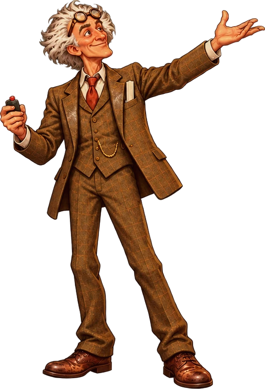</div>
      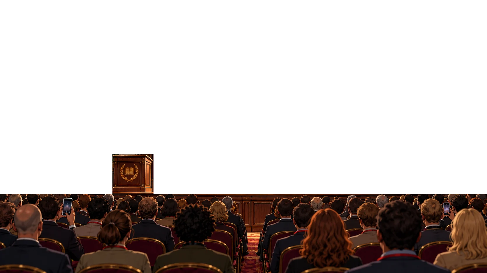
      <div class="screen" id="screen"><div class="slide" id="slide"></div></div>
      <div class="lights" id="lights"></div>
      <div class="cone feld" id="coneFeld"></div>
    </div>
    <div class="cone mespot" id="coneMe"></div>
    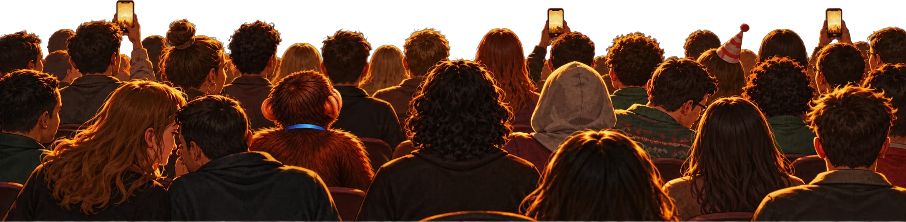
    <div class="me" id="me" aria-label="You, standing up in the audience"><div class="mycite" id="mycite">1 POSTER</div>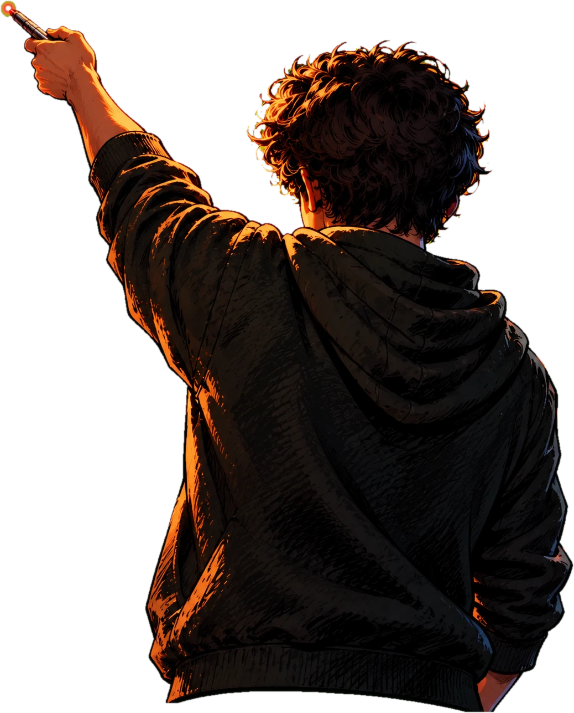<span id="hand"></span></div>
    <svg class="beam" id="beam"><line id="beamLine" x1="0" y1="0" x2="0" y2="0" stroke-width="0"></line></svg>
    <div class="hud">
      <div class="meter"><div class="lab"><span>Feldstrom</span><span>Hall</span><span>You</span></div><div class="bar"><div class="needle" id="needle"></div></div></div>
      <div class="meter nerves"><div class="lab"><span>Your hand</span><span id="nervesLab">shaky</span></div><div class="bar"><div class="fill" id="nerves"></div></div></div>
    </div>
    <div class="chat" id="chat"><span class="live">&#9679; LIVE &middot; tobi</span></div>
    <div class="prompt" id="prompt" hidden></div>
    <div class="speech" id="speech" hidden><div class="who" id="who"></div><div id="line"></div><div class="choices" id="choices"></div><span class="next" id="next">tap &#9656;</span></div>
    <div class="flash" id="flash"></div>
    <div class="strobe" id="strobe"></div>
    <div class="rise" id="rise">
      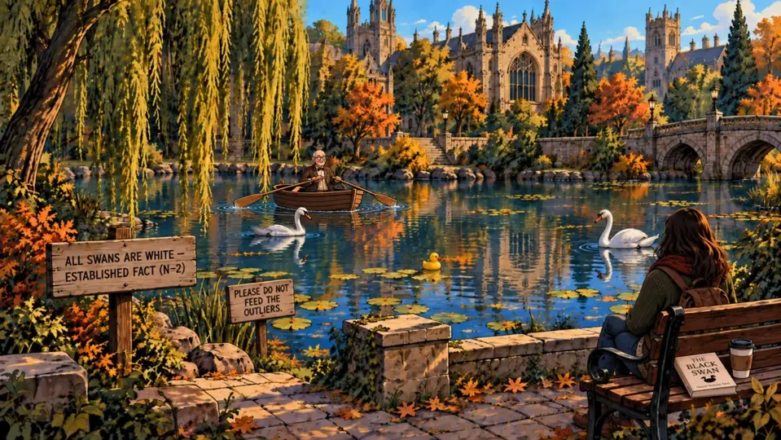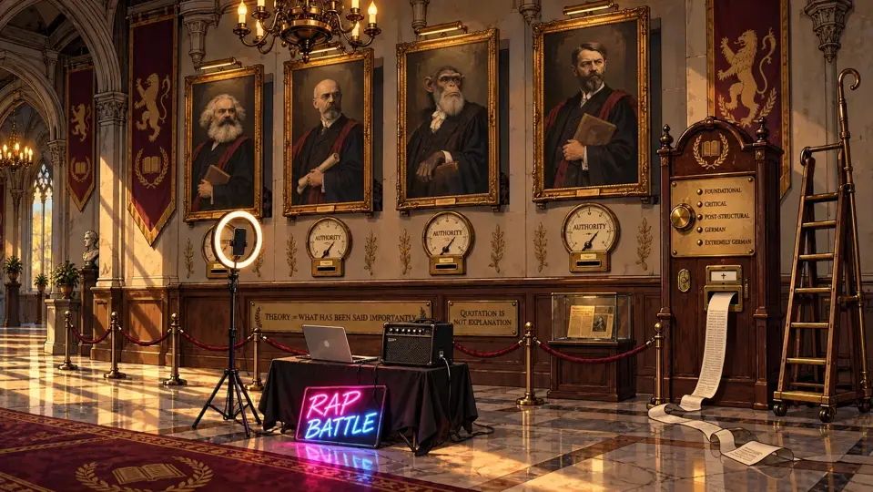
      <div class="vign"></div><div class="lesson" id="lesson"></div></div>
    <div class="tab" id="tab"><div class="count" id="tabCount"></div><div class="cap" id="tabCap"></div></div>
    <div class="fight" id="fight">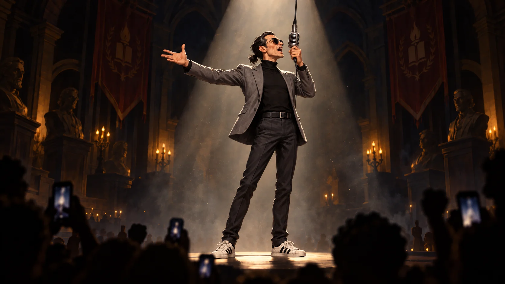
      <div class="faceoff" id="faceoff">
        <div class="ftr" id="foMe" style="height:74%"><div class="cone"></div><div class="pool"></div>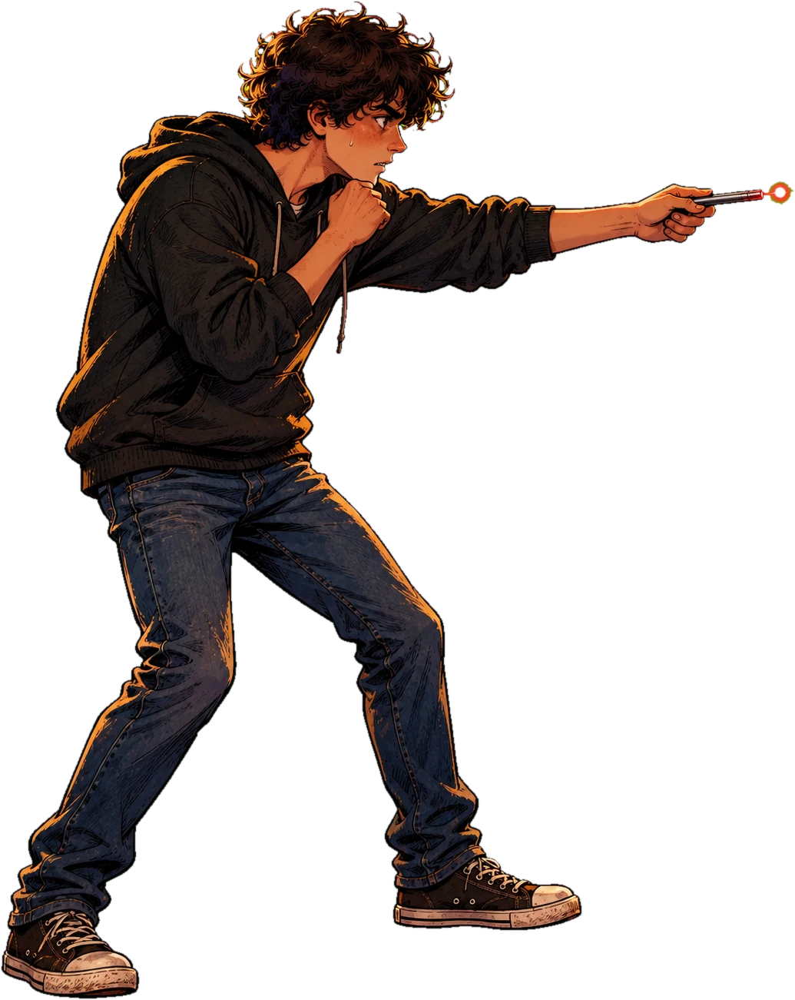<div class="nm">The Student<small>Trained by Prof. Stellmacher</small></div></div>
        <div class="ftr" id="foFeld" style="height:80%"><div class="cone"></div><div class="pool"></div>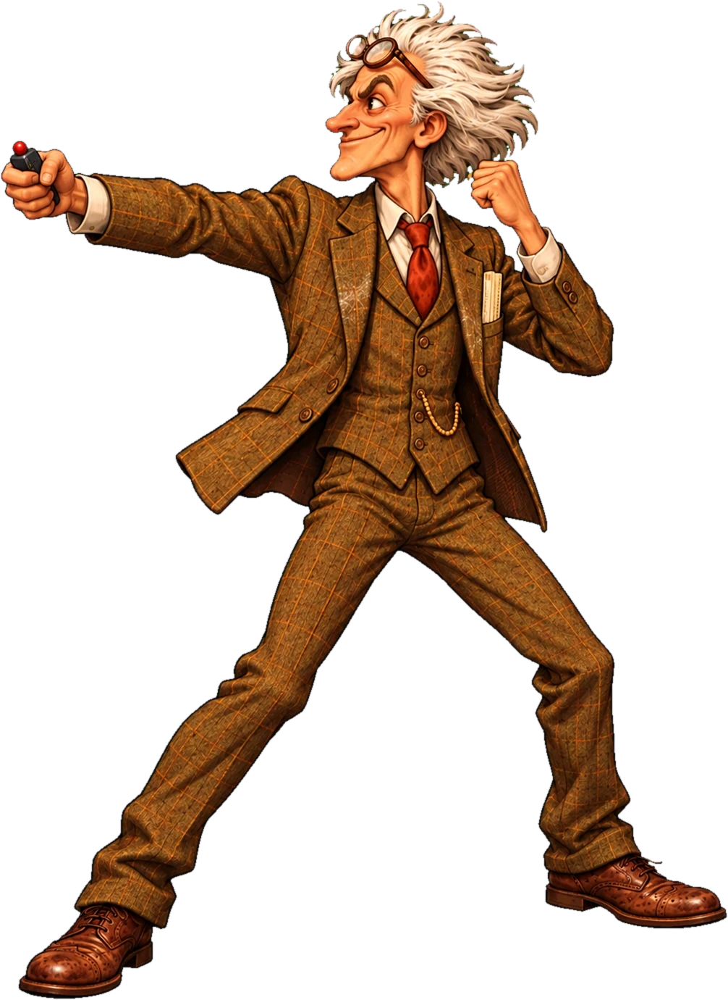<div class="nm">Magnus Feldstrom<small>Undefeated &middot; Unfalsified</small></div></div>
        </div>
      <div class="tape" id="tape"><div class="blue" id="tapeBlue">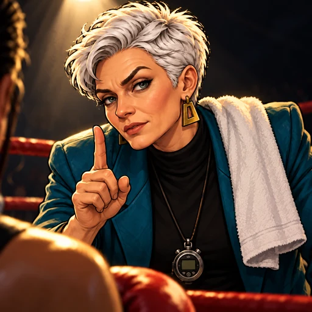<div class="nm">The Student<small>Trained by Prof. Stellmacher</small></div></div>
        <div class="red" id="tapeRed"><div class="nm">Magnus Feldstrom<small>Undefeated &middot; Unfalsified</small></div></div><div class="vs">VS</div></div>
      <div class="cap" id="fightCap"></div></div>
    <div class="roundcard" id="roundcard"><div class="rope"></div><div class="mk">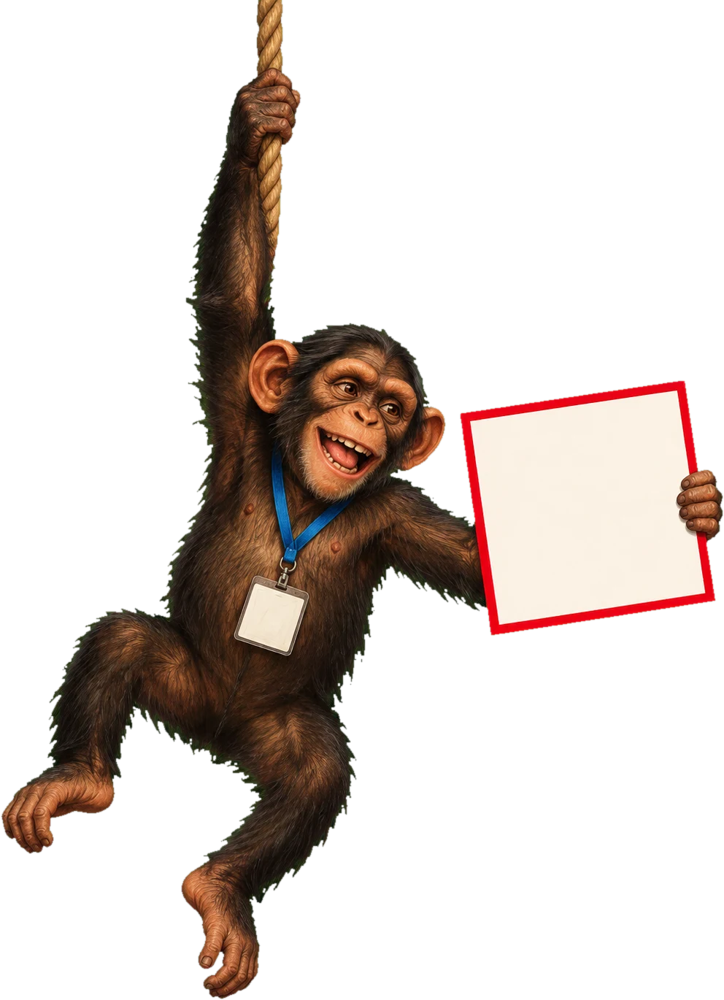<div class="rcard" id="roundTxt">ROUND 1</div></div></div>
    <div class="coach" id="coach"><div class="bub"><b>Stellmacher &middot; your corner</b><span id="coachLine"></span></div></div>
    <button class="callbtn" id="callbtn" type="button">Call your corner</button>
    <div class="western" id="western"><b>The Keynote Showdown</b><i>One pointer &middot; one professor &middot; four slides</i></div>
    <div class="eyes" id="eyes"><div class="feye">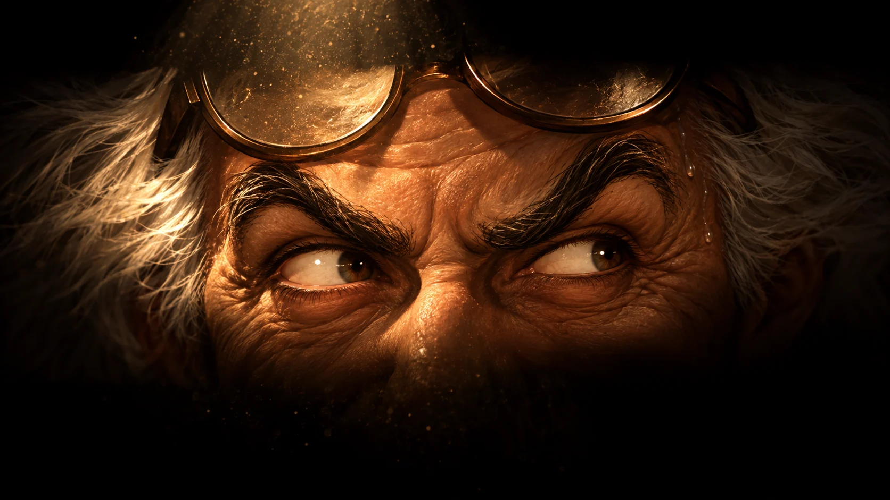<span class="lbl">Feldstrom</span></div><div class="hand">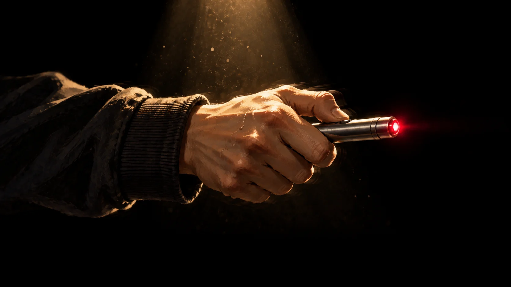<span class="lbl">You</span></div></div>
    <div class="card" id="card" hidden><div id="cardBody"></div></div>
  </div>

</main>

<script>
(function(){
  var $ = function(id){ return document.getElementById(id); };
  var stage = $('stage'), cam = $('cam'), screen = $('screen'), slideEl = $('slide'), feld = $('feld');
  var mode = 'lock', easy = false, gen = 0;
  var S = { meter:-40, nerves:.55, strong:0, weak:0, laughs:0 };

  // ---------- sound: synthesised, starts on the first tap
  var ac = null;
  function audio(){ try { ac = ac || new (window.AudioContext || window.webkitAudioContext)(); if (ac.state === 'suspended') ac.resume(); } catch(e){} }
  function tone(type, f0, f1, dur, vol, delay){
    if (!ac) return; var t = ac.currentTime + (delay || 0), o = ac.createOscillator(), g = ac.createGain();
    o.type = type; o.frequency.setValueAtTime(f0, t); o.frequency.exponentialRampToValueAtTime(Math.max(20, f1), t + dur);
    g.gain.setValueAtTime(vol, t); g.gain.exponentialRampToValueAtTime(.0001, t + dur);
    o.connect(g); g.connect(ac.destination); o.start(t); o.stop(t + dur + .02);
  }
  var sfx = {
    lock: function(){ tone('square', 880, 660, .07, .05); },
    zap:  function(){ tone('sawtooth', 2400, 300, .22, .06); },
    boom: function(){ tone('sine', 140, 38, .6, .35); tone('triangle', 520, 1040, .25, .06, .05); tone('triangle', 780, 1560, .3, .05, .16); },
    meh:  function(){ tone('triangle', 440, 520, .18, .06); },
    laugh:function(){ for (var i = 0; i < 5; i++) tone('triangle', 330 - i * 18, 250 - i * 18, .12, .05, i * .13); }
  };

  // ---------- a spaghetti-western score, synthesised live (a real track would replace it) ----------
  // A low drone, a heartbeat, a twanging bass guitar, the whistled "ah-ee-ah" call, low brass
  // "wah"s as it builds, and a pocket-watch chime while you aim. Stings for a hit and a miss.
  var M = { on:false, level:0, aim:false, beat:0, next:0, iv:null, out:null, drone:[] };
  var noiseBuf = null;
  function noise(){ if (noiseBuf) return noiseBuf; noiseBuf = ac.createBuffer(1, ac.sampleRate * 2, ac.sampleRate);
    var d = noiseBuf.getChannelData(0); for (var i = 0; i < d.length; i++) d[i] = Math.random() * 2 - 1; return noiseBuf; }
  function env(node, t, a, peak, dec){ node.gain.setValueAtTime(0.0001, t); node.gain.exponentialRampToValueAtTime(peak, t + a); node.gain.exponentialRampToValueAtTime(0.0001, t + a + dec); }
  function note(type, f, t, a, peak, dec, opts){
    opts = opts || {};
    var o = ac.createOscillator(), g = ac.createGain(), last = g;
    o.type = type; o.frequency.setValueAtTime(f, t);
    if (opts.bend) o.frequency.exponentialRampToValueAtTime(f * opts.bend, t + (opts.bendT || .15));
    if (opts.vib){ var l = ac.createOscillator(), lg = ac.createGain(); l.frequency.value = opts.vib; lg.gain.value = f * .012; l.connect(lg); lg.connect(o.frequency); l.start(t); l.stop(t + a + dec + .1); }
    o.connect(g);
    if (opts.lp){ var f2 = ac.createBiquadFilter(); f2.type = 'lowpass'; f2.frequency.setValueAtTime(opts.lp, t); if (opts.lpTo) f2.frequency.exponentialRampToValueAtTime(opts.lpTo, t + a + dec); g.connect(f2); last = f2; }
    last.connect(M.out || ac.destination); env(g, t, a, peak, dec); o.start(t); o.stop(t + a + dec + .05);
  }
  function thump(t, v){ note('sine', 62, t, .005, v, .28, { bend:.55, bendT:.2 }); }
  function pluck(f, t, v){ note('sawtooth', f, t, .004, v, .9, { lp:1800, lpTo:300, bend:.985, bendT:.4 }); }
  function whistle(t, v){
    // "ah - ee - ah - ee - ahhh"
    var seq = [[880, .16], [1175, .16], [880, .16], [1175, .16], [880, .9]], tt = t;
    seq.forEach(function(n){ note('sine', n[0], tt, .03, v, n[1], { vib: n[1] > .5 ? 6 : 0 }); tt += n[1] + .02; });
  }
  function wah(t, v){ [220, 220, 207.65].forEach(function(f, i){ note('sawtooth', f, t + i * .32, .05, v, .26, { lp:400, lpTo:1400 }); }); }
  function chime(t, i){ var mel = [1760, 2093, 2637, 2349, 2093, 1976, 1760, 1319]; note('triangle', mel[i % mel.length], t, .002, .05, .5); }
  function schedule(){
    if (!M.on || !ac) return;
    var bpm = (M.aim ? 84 : 72) + M.level * 8, spb = 60 / bpm;
    while (M.next < ac.currentTime + .25){
      var t = M.next, b = M.beat, bar = Math.floor(b / 4), inBar = b % 4;
      if (inBar === 0 || inBar === 2){ thump(t, M.aim ? .5 : .35); thump(t + .17, M.aim ? .32 : .22); }
      if (M.aim){ chime(t, b); }
      else {
        if (inBar === 0) pluck(110, t, .16);
        if (inBar === 2) pluck(82.4, t, .14);
        if (M.level >= 1 && inBar === 0 && bar % 2 === 0) whistle(t + .05, .1);
        if (M.level >= 2 && inBar === 2 && bar % 2 === 1) wah(t, .07);
      }
      M.beat++; M.next += spb;
    }
  }
  // In the game (2026-09-28) the duel runs in a frame over the Keynote room: same origin, so it reads
  // the game's music setting and voice table, and hands the win back to the room.
  var IN_GAME = window.parent !== window && !!window.parent.CODEBOOK_VO;
  if (IN_GAME) document.body.classList.add('ingame');
  var MV = (function(){ try { if (localStorage.getItem('cb_music') === '0') return 0; return { quiet:.3, normal:.6, loud:1 }[localStorage.getItem('cb_music_vol') || 'normal'] || .6; } catch(e){ return .6; } })();
  function gameClips(html){
    if (!IN_GAME) return [];
    try { var P = window.parent, SP = P.CODEBOOK_VOICE_SPRITE || {};
      return (P.CODEBOOK_VO_CLIPS(html) || []).map(function(c){ return SP[c] ? '../' + SP[c][0] : null; }).filter(Boolean); } catch(e){ return []; }
  }
  var track = null, trackVol = .55;
  function trackTo(v, ms){ if (!track) return; v = v * MV; var from = track.volume, t0 = performance.now();
    (function step(now){ var k = Math.min(1, ((now || performance.now()) - t0) / (ms || 600)); track.volume = Math.max(0, Math.min(1, from + (v - from) * k)); if (k < 1) requestAnimationFrame(step); })(); }
  var music = {
    start: function(){
      if (!track){ track = new Audio('duel-music.mp3'); track.loop = true; }
      if (!track.paused) return;
      track.volume = 0; track.currentTime = 0; track.play().catch(function(){}); trackTo(trackVol, 2500);
      return;
    },
    synthStart: function(){
      if (!ac || M.on) return; M.on = true;
      M.out = ac.createGain(); M.out.gain.value = .9; M.out.connect(ac.destination);
      [55, 82.41].forEach(function(f){
        var o = ac.createOscillator(), g = ac.createGain(), lp = ac.createBiquadFilter();
        o.type = 'sawtooth'; o.frequency.value = f; lp.type = 'lowpass'; lp.frequency.value = 260;
        g.gain.value = 0; g.gain.linearRampToValueAtTime(.05, ac.currentTime + 3);
        o.connect(lp); lp.connect(g); g.connect(M.out); o.start(); M.drone.push(g);
      });
      M.beat = 0; M.next = ac.currentTime + .1; M.iv = setInterval(schedule, 50);
    },
    level: function(n){ M.level = n; },
    aim: function(on){ M.aim = on; trackTo(on ? .28 : trackVol, 500); },
    stop: function(){ if (track && !track.paused){ trackTo(0, 1500); var tr = track; setTimeout(function(){ tr.pause(); }, 1600); } if (!M.on) return; M.on = false; clearInterval(M.iv); var t = ac.currentTime; M.out.gain.setTargetAtTime(0.0001, t, .4); var o = M.out; setTimeout(function(){ o.disconnect(); }, 2500); M.drone = []; },
    bell: function(){ var t = ac.currentTime; [[196, .3], [196 * 2.76, .12], [196 * 5.4, .06]].forEach(function(p){ note('sine', p[0], t, .005, p[1], 3.2); }); },
    strong: function(){ var t = ac.currentTime;
      [220, 277.2, 329.6, 440].forEach(function(f){ note('sawtooth', f, t, .02, .07, 1.3, { lp:2400, lpTo:600 }); });
      note('sine', 90, t, .005, .6, .9, { bend:.45 });
      var n = ac.createBufferSource(), g = ac.createGain(), hp = ac.createBiquadFilter(); n.buffer = noise(); hp.type = 'highpass'; hp.frequency.value = 5000;
      n.connect(hp); hp.connect(g); g.connect(ac.destination); env(g, t, .005, .2, 1.4); n.start(t); n.stop(t + 1.6); },
    miss: function(){ var t = ac.currentTime; [233.1, 220, 207.7, 196].forEach(function(f, i){ note('sawtooth', f, t + i * .34, .04, .08, i === 3 ? .9 : .28, { lp:600, lpTo:1200, vib: i === 3 ? 5 : 0 }); }); },
    gasp: function(){ var t = ac.currentTime, n = ac.createBufferSource(), g = ac.createGain(), bp = ac.createBiquadFilter();
      n.buffer = noise(); bp.type = 'bandpass'; bp.frequency.setValueAtTime(700, t); bp.frequency.linearRampToValueAtTime(1300, t + .25); bp.Q.value = 1.2;
      n.connect(bp); bp.connect(g); g.connect(ac.destination); g.gain.setValueAtTime(.0001, t); g.gain.exponentialRampToValueAtTime(.5, t + .09); g.gain.exponentialRampToValueAtTime(.0001, t + .9); n.start(t); n.stop(t + 1); },
    whistle: function(){ if (ac) whistle(ac.currentTime + .02, .12); }
  };

  // ---------- the slides. Each [data-zone] is something you can point at.
  var ROUNDS = [
    { n:15, speed:1, chaos:null,
      html:'<div class="st"><span data-zone="att">ATTENDANCE</span> <u data-zone="causes">CAUSES</u> <span data-zone="learn">LEARNING</span></div><div class="ss">(proven)</div>' +
           '<svg data-zone="plot" viewBox="0 0 120 60" style="height:30cqh"><line x1="6" y1="56" x2="116" y2="56" stroke="#1d2340" stroke-width="1.5"/><line x1="6" y1="4" x2="6" y2="56" stroke="#1d2340" stroke-width="1.5"/>' +
           [[14,48],[22,44],[30,46],[38,38],[48,36],[56,30],[64,32],[74,24],[84,22],[94,16],[104,14]].map(function(p){ return '<circle cx="'+p[0]+'" cy="'+p[1]+'" r="2.4" fill="#2f5fc4"/>'; }).join('') +
           '<line x1="10" y1="50" x2="110" y2="11" stroke="#d2261e" stroke-width="1.6"/></svg>',
      line:'&ldquo;Slide fifteen. Attendance <i>causes</i> learning. Proven, by my young collaborator. You are welcome.&rdquo;',
      stamp:'OBSERVATIONAL',
      zones:{
        causes:{ ok:true,
          strong:'&ldquo;It was observational. Selection isn&rsquo;t ruled out; it says so in my own limitations box. I found a gap where the mechanism said it would be. Not a cause.&rdquo;',
          weak:'&ldquo;Um. &lsquo;Causes&rsquo;? I&rsquo;m not sure it&hellip; causes?&rdquo;',
          back:'&ldquo;&hellip;A detail.&rdquo; He clicks on, a little faster.',
          weakBack:'&ldquo;Not sure! The young are never sure. That is why they need me.&rdquo;',
          chat:[['stats_nerd','OBSERVATIONAL'],['anon_reviewer','selection??'],['tobi','THAT&rsquo;S MY COLLEAGUE']] },
        att:{ back:'&ldquo;Attendance? Beautifully measured. Every register, every lecture. If there is a problem, it is not in the measuring.&rdquo;' },
        learn:{ back:'&ldquo;Learning is learning. Grades went up. You are pointing at the outcome, my dear, not at a flaw.&rdquo;' },
        plot:{ back:'&ldquo;The dots! Nobody argues with dots. The dots are the only honest people on this stage.&rdquo;' }
      },
      hint:'The dots are fine. It&rsquo;s what he says they <i>do</i>.', coach:'He says <i>causes</i>. What did your design let you say?' },

    { n:16, speed:1.08, chaos:null,
      html:'<div class="st">TRUE FOR <u data-zone="every">EVERY</u> <span data-zone="student">STUDENT</span>, <u data-zone="where">EVERYWHERE</u></div>' +
           '<div class="row"><svg data-zone="globe" viewBox="0 0 80 80" style="height:36cqh"><circle cx="40" cy="40" r="36" fill="#bfd6f2" stroke="#1d2340" stroke-width="1.5"/><path d="M14 30c8-6 16-2 20 4s-2 12 4 16 14-4 18 2-4 14-10 16M50 10c-2 8 6 10 12 12s8 10 6 16" fill="none" stroke="#5a9a5a" stroke-width="5" stroke-linecap="round"/></svg>' +
           '<span data-zone="pin" style="font-size:4.4cqh;color:#d2261e;font-weight:700;line-height:1.1">&#9679;<br>one course,<br>one term</span></div>',
      line:'&ldquo;Sixteen. And because it is a law, it holds for every student, everywhere. Like gravity. Like queues.&rdquo;',
      stamp:'ONE COURSE',
      zones:{
        every:{ ok:true,
          strong:'&ldquo;One course. One term. One university. It&rsquo;s true <i>here</i>. &lsquo;Everywhere&rsquo; is your word, not mine.&rdquo;',
          weak:'&ldquo;It&rsquo;s&hellip; maybe not <i>every</i> student?&rdquo;',
          back:'&ldquo;For now,&rdquo; he says, to the slide, not to you.',
          weakBack:'&ldquo;Close enough to every. We round, in science.&rdquo;',
          chat:[['phd_yr4','ONE COURSE lmao'],['mensa_cook','schnitzel also true everywhere'],['tobi','context is king']] },
        student:{ back:'&ldquo;Students are students. Next you will tell me professors are people.&rdquo;' },
        globe:{ back:'&ldquo;The globe is to scale. I checked it myself. On a globe.&rdquo;' }
      },
      alias:{ where:'every', pin:'every' },
      hint:'Where was your study actually done? And where does he say it holds?', coach:'One course, one term. Find where he says <i>everywhere</i>.' },

    { n:17, speed:1.16, chaos:'monkey',
      html:'<div class="st">AN <span data-zone="enorm">ENORMOUS</span> EFFECT</div>' +
           '<div class="row" style="align-items:flex-end">' +
           '<div style="display:flex;flex-direction:column;justify-content:space-between;height:40cqh;font-size:4.2cqh;font-weight:700;text-align:right"><span>100</span><span>99</span><span data-zone="axis" style="color:#d2261e">98</span></div>' +
           '<div style="position:relative;display:flex;gap:5cqw;align-items:flex-end;height:40cqh;border-left:.5cqh solid #1d2340;border-bottom:.5cqh solid #1d2340;padding:0 3cqw">' +
             '<span style="display:block;width:8cqw;height:10%;background:#2f5fc4"></span>' +
             '<span style="position:relative;display:block;width:8cqw;height:92%;background:#d2261e">' +
               '<span data-zone="ci" style="position:absolute;left:50%;top:-6cqh;width:5cqw;height:46cqh;margin-left:-2.5cqw;border:solid #1d2340;border-width:.6cqh 0;"><span style="position:absolute;left:50%;top:0;bottom:0;border-left:.6cqh solid #1d2340"></span></span>' +
             '</span></div>' +
           '<div data-zone="d" style="font-size:6cqh;font-style:italic;color:#4a4f68">d = (large)</div></div>',
      line:'&ldquo;Seventeen. The effect. Enormous. As you can see.&rdquo;',
      stamp:'CI &ni; 0',
      zones:{
        ci:{ ok:true,
          strong:'&ldquo;Look at the interval. It reaches down past the other bar. It rules out a large effect. Small, if it&rsquo;s anything.&rdquo;',
          weak:'&ldquo;Those lines on the bar&hellip; they&rsquo;re quite long?&rdquo;',
          back:'He looks at the screen. The screen looks back. Somebody in row four laughs, and it isn&rsquo;t at you.',
          weakBack:'&ldquo;Long lines, long career. Next.&rdquo;',
          chat:[['stats_nerd','interval says no'],['anon_reviewer','the right size of sure'],['tobi','is the monkey still presenting']] },
        axis:{ ok:true, stampText:'AXIS AT 98',
          strong:'&ldquo;Your axis starts at ninety-eight. That&rsquo;s not an effect. That&rsquo;s a zoom.&rdquo;',
          weak:'&ldquo;The numbers on the side are&hellip; a bit high?&rdquo;',
          back:'He squints at the axis, as if it had been added by somebody else.',
          weakBack:'&ldquo;High numbers. For a high finding.&rdquo;',
          chat:[['stats_nerd','AXIS STARTS AT 98 LOL'],['phd_yr4','ZOOM'],['tobi','clip that']] },
        enorm:{ back:'&ldquo;&lsquo;Enormous&rsquo; is not a claim. It is my brand.&rdquo;' },
        d:{ back:'&ldquo;&lsquo;Large&rsquo; is a technical term. I looked it up, in my own book.&rdquo;' }
      },
      hint:'Not the words this time. Look at the chart itself.', coach:'Ignore his words. Read his chart: the axis, the whiskers.' },

    { n:18, speed:1.25, chaos:'green',
      html:'<div class="st"><u data-zone="never">NEVER</u> BEFORE <span data-zone="disc">DISCOVERED</span><sup style="color:#d2261e;font-size:.55em">&sup1;</sup></div><div class="ss">a first in the history of science</div>' +
           '<div data-zone="lit" style="border:.5cqh solid #1d2340;padding:1.5cqh 3cqw;font-size:5cqh">Literature review: <b>(none needed)</b></div>' +
           '<div style="position:absolute;left:3cqw;right:22cqw;bottom:3cqh;font-size:4.2cqh;color:#4a4536;text-align:left;border-top:.3cqh solid #b9b09a;padding-top:1cqh"><span data-zone="fn"><b style="color:#d2261e">&sup1;</b> <i>see also:</i> Petersen 2019; Nakamura 2021; Boateng 2023</span></div>',
      line:'&ldquo;Eighteen. Never before discovered. Not by anyone. I checked. &hellip;I did not check.&rdquo;',
      stamp:'3 PAPERS',
      zones:{
        fn:{ ok:true,
          strong:'&ldquo;Your own footnote. Petersen, Nakamura, Boateng. Three papers asked it before me. We add one careful step. That&rsquo;s the contribution.&rdquo;',
          weak:'&ldquo;There&rsquo;s&hellip; something small at the bottom there?&rdquo;',
          back:'&ldquo;Three,&rdquo; he repeats, the way people repeat a diagnosis.',
          weakBack:'&ldquo;Small print is for small people.&rdquo; But he steps in front of it.',
          chat:[['librarian_kira','Certainly! Petersen, Nakamura, Boateng.'],['phd_yr4','HIS OWN FOOTNOTE'],['tobi','we are TRENDING']] },
        never:{ back:'&ldquo;&lsquo;Never&rsquo; is a strong word. Prove it isn&rsquo;t true. You can&rsquo;t. You have only a word, and so do I.&rdquo;' },
        disc:{ back:'&ldquo;Discovered, found, noticed. I will not argue about verbs with a student.&rdquo;' },
        lit:{ back:'&ldquo;My literature review is complete. I reviewed my literature.&rdquo;' }
      },
      hint:'A word is not evidence. The &sup1; sends you to his own footnote: three papers that did it before.', coach:'Pointing at <i>never</i> proves nothing. See the little &sup1; after DISCOVERED? Follow it to the bottom of his slide.' }
  ];
  // ---- Bout two and bout three: if you go down, he comes back with different slides (author, 2026-09-28)
  function Z(ok, a, b, c, d, chat){ return ok ? { ok:true, strong:a, weak:b, back:c, weakBack:d, chat:chat } : { back:a }; }
  var SET_B = [
    { n:31, speed:1, chaos:null,
      html:'<div class="st">SIT IN THE <u data-zone="front">FRONT ROW</u>, GET A&nbsp;<span data-zone="grade">1.0</span></div><div class="ss" data-zone="plan">Policy: everybody moves to the front row</div>' +
           '<div class="row" style="gap:2cqw;font-size:4cqh"><span style="background:#2f5fc4;color:#fff;padding:1cqh 2cqw">Row 1: &Oslash; 1.3</span><span style="background:#8a8aa0;color:#fff;padding:1cqh 2cqw">Row 20: &Oslash; 2.7</span></div>',
      line:'&ldquo;Thirty-one. Students in the front row get better grades. So: everybody sits in the front row. Problem solved.&rdquo;',
      stamp:'WHO SITS THERE?',
      zones:{ front:Z(true, '&ldquo;Who chooses the front row? The keen ones. They&rsquo;d get good grades in row twenty. The seat didn&rsquo;t do it: they picked the seat.&rdquo;',
                '&ldquo;Maybe the front row is&hellip; different people?&rdquo;', 'He looks at row one. Row one looks keen. He clicks on.', '&ldquo;People are people. Chairs are chairs.&rdquo;',
                [['stats_nerd','SELF-SELECTION'],['phd_yr4','i sit at the back and i am FINE'],['tobi','row 20 represent']]),
              grade:Z(false, '&ldquo;The grade is the grade. It came from the registry. Do you doubt the registry?&rdquo;'),
              plan:Z(false, '&ldquo;The policy is bold! Bold is not a flaw. Bold is a <i>brand</i>.&rdquo;') },
      hint:'The grades are real. Ask who <i>chose</i> to sit in the front.', coach:'Who ends up in the front row, and why? That&rsquo;s your target.' },
    { n:32, speed:1.08, chaos:null,
      html:'<div class="st"><span data-zone="pct">97%</span> OF STUDENTS <span data-zone="love">LOVE</span> MY LECTURES</div>' +
           '<div class="ss">(course evaluation, winter term)</div><div style="position:absolute;left:3cqw;right:22cqw;bottom:3cqh;font-size:4.2cqh;color:#4a4536;text-align:left;border-top:.3cqh solid #b9b09a;padding-top:1cqh"><span data-zone="resp"><b style="color:#d2261e">*</b> 31 responses from 400 enrolled</span></div>',
      line:'&ldquo;Thirty-two. Ninety-seven per cent. The students have spoken.&rdquo;',
      stamp:'8% ANSWERED',
      zones:{ resp:Z(true, '&ldquo;Thirty-one out of four hundred answered. Eight per cent. The people who loved it filled it in. The other three hundred and sixty-nine didn&rsquo;t say anything.&rdquo;',
                '&ldquo;The little star at the bottom&hellip; isn&rsquo;t that a lot of people missing?&rdquo;', '&ldquo;Thirty-one <i>enthusiastic</i> people,&rdquo; he says, less loudly.', '&ldquo;Missing people cannot complain. That is the beauty of it.&rdquo;',
                [['anon_reviewer','response rate??'],['stats_nerd','8% LMAO'],['tobi','i didn&rsquo;t fill it in either']]),
              pct:Z(false, '&ldquo;Ninety-seven is simply the number. It is correctly calculated. I used a calculator.&rdquo;'),
              love:Z(false, '&ldquo;&lsquo;Love&rsquo; is the word on the form. Five stars: love. Ask the form.&rdquo;') },
      hint:'The percentage is correct. Ask <i>who</i> it&rsquo;s a percentage of. The star at the bottom.', coach:'Ninety-seven per cent of <i>whom</i>? Find the star.' },
    { n:33, speed:1.16, chaos:'monkey',
      html:'<div class="st">BY 2040, GRADES WILL REACH <span data-zone="big">140%</span></div>' +
           '<svg viewBox="0 0 140 64" style="height:40cqh"><line x1="6" y1="58" x2="136" y2="58" stroke="#1d2340" stroke-width="1.4"/><line x1="6" y1="4" x2="6" y2="58" stroke="#1d2340" stroke-width="1.4"/>' +
           '<polyline points="10,50 20,47 30,46 40,42 50,41" fill="none" stroke="#2f5fc4" stroke-width="2.4"/>' +
           '<g data-zone="dash"><polyline points="50,41 130,8" fill="none" stroke="#d2261e" stroke-width="2.4" stroke-dasharray="4 3"/><rect x="52" y="4" width="80" height="40" fill="transparent"/></g>' +
           '<text x="10" y="64" font-size="5" fill="#4a4536">2019</text><text x="44" y="64" font-size="5" fill="#4a4536">2024</text><text x="118" y="64" font-size="5" fill="#d2261e">2040</text></svg>',
      line:'&ldquo;Thirty-three. The trend. Extend it, and in 2040 our students score one hundred and forty per cent.&rdquo;',
      stamp:'NO DATA HERE',
      zones:{ dash:Z(true, '&ldquo;Your data stop in 2024. Everything after that is a ruler. You can&rsquo;t score more than a hundred per cent; the line doesn&rsquo;t know that.&rdquo;',
                '&ldquo;The red dotted bit&hellip; there&rsquo;s nothing under it?&rdquo;', 'He looks at 2040. 2040 does not look back.', '&ldquo;Dotted lines are the future. The future is dotted.&rdquo;',
                [['stats_nerd','EXTRAPOLATION'],['phd_yr4','140% of what'],['tobi','i&rsquo;ll be 40 in 2040']]),
              big:Z(false, '&ldquo;A big number is not a flaw. A big number is a <i>headline</i>.&rdquo;') },
      hint:'The blue line is data. What is the red dotted line?', coach:'Where do his data end? Hit what comes after.' },
    { n:34, speed:1.25, chaos:'green',
      html:'<div class="st"><span data-zone="sig">SIGNIFICANT!</span></div><div style="font-size:9cqh;font-weight:900;color:#1d2340" data-zone="p">p = 0.049</div>' +
           '<div class="ss">Coffee before lectures improves memory</div><div style="position:absolute;left:3cqw;right:22cqw;bottom:3cqh;font-size:4.2cqh;color:#4a4536;text-align:left;border-top:.3cqh solid #b9b09a;padding-top:1cqh"><span data-zone="tests"><b style="color:#d2261e">&dagger;</b> best of 20 outcomes tested</span></div>',
      line:'&ldquo;Thirty-four. Coffee. Memory. Significant. Science has spoken, and it has spoken at the five per cent level.&rdquo;',
      stamp:'1 IN 20',
      zones:{ tests:Z(true, '&ldquo;Twenty outcomes. At five per cent, one of them comes up significant by chance alone. You found the one. You didn&rsquo;t find coffee.&rdquo;',
                '&ldquo;There&rsquo;s a little dagger at the bottom&hellip; twenty what?&rdquo;', '&ldquo;Nineteen of them were&hellip; less interesting,&rdquo; he admits.', '&ldquo;Twenty chances to be right. That is called being thorough.&rdquo;',
                [['stats_nerd','MULTIPLE TESTING'],['anon_reviewer','correct for it. CORRECT FOR IT.'],['tobi','i&rsquo;ve had 4 coffees and remember nothing']]),
              p:Z(false, '&ldquo;Oh-point-oh-four-nine is below oh-point-oh-five. That is not an opinion. That is arithmetic.&rdquo;'),
              sig:Z(false, '&ldquo;Significant is a technical term. I have used it technically.&rdquo;') },
      hint:'The p-value is below .05. Ask how many times he rolled the dice. The dagger.', coach:'How many tries did it take him? Follow the dagger to the bottom.' }
  ];
  var SET_C = [
    { n:41, speed:1, chaos:null,
      html:'<div class="st">LECTURES <u data-zone="cure">CURE</u> STRESS</div><div class="ss">Survey question, answered by 212 students:</div>' +
           '<div data-zone="q" style="border:.5cqh solid #1d2340;padding:1.5cqh 3cqw;font-size:4.6cqh;font-style:italic">&ldquo;How much have my wonderful lectures reduced your stress?&rdquo;</div>',
      line:'&ldquo;Forty-one. I asked. They answered. Lectures cure stress.&rdquo;',
      stamp:'LEADING QUESTION',
      zones:{ q:Z(true, '&ldquo;Read the question. &lsquo;How much have my wonderful lectures reduced your stress?&rsquo; There&rsquo;s no answer that says they didn&rsquo;t. The question wrote the result.&rdquo;',
                '&ldquo;The question in the box sounds a bit&hellip; friendly?&rdquo;', 'He reads his own question aloud, and stops at &lsquo;wonderful&rsquo;.', '&ldquo;Friendly questions get friendly answers. That is good manners.&rdquo;',
                [['phd_yr4','WONDERFUL lectures lol'],['stats_nerd','leading question'],['tobi','my stress: yes']]),
              cure:Z(false, '&ldquo;Cure, reduce, abolish. The verb is not the point, my dear.&rdquo;') },
      hint:'The claim comes from the survey. Read the survey question itself.', coach:'Read his survey question word by word. Could anyone answer &lsquo;not at all&rsquo;?' },
    { n:42, speed:1.08, chaos:null,
      html:'<div class="st">THE <span data-zone="avg">AVERAGE</span> STUDENT ATTENDS HALF THE LECTURES</div>' +
           '<svg data-zone="hist" viewBox="0 0 120 60" style="height:38cqh"><line x1="4" y1="54" x2="116" y2="54" stroke="#1d2340" stroke-width="1.4"/>' +
           '<rect x="8" y="6" width="14" height="48" fill="#2f5fc4"/><rect x="26" y="46" width="14" height="8" fill="#2f5fc4"/><rect x="44" y="50" width="14" height="4" fill="#2f5fc4"/><rect x="62" y="50" width="14" height="4" fill="#2f5fc4"/><rect x="80" y="46" width="14" height="8" fill="#2f5fc4"/><rect x="98" y="8" width="14" height="46" fill="#2f5fc4"/>' +
           '<text x="8" y="60" font-size="5" fill="#4a4536">never</text><text x="96" y="60" font-size="5" fill="#4a4536">always</text></svg>',
      line:'&ldquo;Forty-two. The average student attends half the time. So we design for the half-attender.&rdquo;',
      stamp:'NOBODY IS AVERAGE',
      zones:{ hist:Z(true, '&ldquo;Look at your own bars. Half come never, half come always. Almost nobody comes half the time. Your average student doesn&rsquo;t exist.&rdquo;',
                '&ldquo;The bars are&hellip; high at the ends and low in the middle?&rdquo;', 'He looks for the half-attender in his histogram. There isn&rsquo;t one.', '&ldquo;The middle is where averages live. Everybody knows that.&rdquo;',
                [['stats_nerd','BIMODAL'],['phd_yr4','the average family has 2.4 children'],['tobi','i am the 0.4']]),
              avg:Z(false, '&ldquo;The average is correctly computed. Add them up, divide. I did it twice.&rdquo;') },
      hint:'The average is correct. Look at the shape of the bars.', coach:'Forget the headline. Where are the students on his chart? Point at the bars.' },
    { n:43, speed:1.16, chaos:'monkey',
      html:'<div class="st">ICE CREAM <u data-zone="raises">RAISES</u> GRADES</div>' +
           '<div class="row" style="font-size:4.4cqh;gap:3cqw"><span style="background:#f3c8d8;padding:1cqh 2cqw">Ice cream sales &uarr;</span><span style="background:#c8e3f3;padding:1cqh 2cqw">Exam grades &uarr;</span></div>' +
           '<div class="ss" data-zone="june" style="font-size:5.6cqh;font-style:normal;font-weight:700;color:#d2261e">both measured in June</div>',
      line:'&ldquo;Forty-three. When ice cream sales rise, grades rise. Free ice cream for everybody.&rdquo;',
      stamp:'IT&rsquo;S SUMMER',
      zones:{ june:Z(true, '&ldquo;June. It&rsquo;s summer: people buy ice cream, and it&rsquo;s exam season, so grades come in. A third thing moves both. The ice cream didn&rsquo;t do anything.&rdquo;',
                '&ldquo;Is it&hellip; because it&rsquo;s June?&rdquo;', 'He checks the calendar on his watch. It says June.', '&ldquo;June is a month, not an argument.&rdquo;',
                [['stats_nerd','CONFOUNDER'],['mensa_cook','ice cream IS good though'],['tobi','the corridor taught us this']]),
              raises:Z(false, '&ldquo;Raises, increases, boosts. Pick a verb, my dear. Any verb.&rdquo;') },
      hint:'Something else happens in June. The red line under the chart.', coach:'What else goes up in June? That&rsquo;s the third thing. Point at it.' },
    { n:44, speed:1.25, chaos:'green',
      html:'<div class="st">ATTENDANCE WINS <span data-zone="nobel">NOBEL PRIZES</span></div>' +
           '<div class="ss">Proof: Dr. A. Keen attended every lecture, 1971&ndash;1975, and won in 2003.</div>' +
           '<div style="position:absolute;left:3cqw;right:22cqw;bottom:3cqh;font-size:4.2cqh;color:#4a4536;text-align:left;border-top:.3cqh solid #b9b09a;padding-top:1cqh"><span data-zone="n1"><b style="color:#d2261e">&sect;</b> sample size: n = 1</span></div>',
      line:'&ldquo;Forty-four. And finally: one student attended every lecture, and won a Nobel Prize. I rest my case.&rdquo;',
      stamp:'n = 1',
      zones:{ n1:Z(true, '&ldquo;n equals one. One person. For every Dr. Keen there are a thousand who came to everything and won nothing. You picked the one that fits.&rdquo;',
                '&ldquo;The bit at the bottom says&hellip; one?&rdquo;', 'He looks at the footnote as though somebody else had typed it.', '&ldquo;One Nobel is more than you have.&rdquo;',
                [['stats_nerd','n = 1 !!!'],['anon_reviewer','anecdote, not data'],['tobi','I attended everything. Where&rsquo;s my Nobel']]),
              nobel:Z(false, '&ldquo;The Nobel Prize is real. I have checked. Repeatedly. With longing.&rdquo;') },
      hint:'One famous person is a story, not a finding. How many people is it? The &sect; at the bottom.', coach:'One brilliant person proves nothing. How big is his sample? Bottom of the slide.' }
  ];
  var SETS = [ROUNDS, SET_B, SET_C];
  var MISS = '&ldquo;Is that a question, or a laser show?&rdquo;';

  // ---------- helpers
  // every pause can be clicked through, like a line (author, 2026-09-28: "click anywhere")
  function wait(ms){ var g = gen; return new Promise(function(res, rej){
    var done = false, t;
    function fin(){ if (done) return; done = true; clearTimeout(t); if (skip === fin) skip = null; g === gen ? res() : rej('reset'); }
    t = setTimeout(fin, ms);
    if (ms >= 400 && !skip) skip = fin;
  }); }
  function alive(g){ if (g !== gen) throw 'reset'; }
  function zoom(k){ document.querySelector('.crowd').classList.toggle('low', k === 'aim'); cam.style.transform = k === 'aim' ? 'translate(-8%, -4%) scale(1.8)' : k === 'mid' ? 'translate(-4%, -2%) scale(1.4)' : 'scale(1)'; }
  function setMeter(v){ S.meter = Math.max(-95, Math.min(95, v)); $('needle').style.left = (50 + S.meter / 2) + '%'; }
  function setNerves(v){ S.nerves = Math.max(.08, Math.min(1, v)); $('nerves').style.width = (S.nerves * 100) + '%';
    var me = $('me'); if (me){ me.style.setProperty('--amp', (0.4 + S.nerves * 2.6).toFixed(2)); me.style.setProperty('--tr', (0.26 - S.nerves * 0.14).toFixed(2) + 's'); }
    $('nervesLab').textContent = S.nerves > .7 ? 'trembling' : S.nerves > .45 ? 'shaky' : S.nerves > .25 ? 'steadier' : 'rock steady'; }
  var CHATC = { prof_ruiz:'#ffc7a1', dept_head_uu:'#a1ffc7', reviewer_3:'#ff9fd0', grad_lina:'#b5e8ff', editor_jss:'#ffe9a1', meta_analyst:'#c9b5ff', prof_okafor:'#9fffe0', lib_services:'#e0e0e0', tobi:'#ffd24a', stats_nerd:'#7fd3ff', anon_reviewer:'#ff8f8f', phd_yr4:'#c5a3ff', mensa_cook:'#ffb071', librarian_kira:'#8effd0' };
  function chat(list){
    var box = $('chat');
    list.forEach(function(m, i){ setTimeout(function(){
      var d = document.createElement('div'); d.className = 'msg';
      d.innerHTML = '<b style="color:' + (CHATC[m[0]] || '#ddd') + '">' + m[0] + '</b> ' + m[1];
      box.appendChild(d); while (box.querySelectorAll('.msg').length > 4) box.querySelector('.msg').remove();
    }, i * 450); });
  }
  // ---- citations (author, 2026-09-28) ----
  var CITE = { n:0, shown:0, mine:0, raf:0 };
  var RETRACT = [['prof_ruiz','retracting my citation'], ['dept_head_uu','Feldstrom (2009) is off my syllabus'],
    ['reviewer_3','withdrawing my 2014 cite, sorry'], ['grad_lina','ctrl+F Feldstrom &rarr; delete'], ['editor_jss','erratum incoming'],
    ['meta_analyst','dropping him from the pooled estimate'], ['phd_yr4','my whole lit review just got shorter'], ['anon_reviewer','I only cited him out of fear tbh'],
    ['prof_okafor','I cited the abstract. I am so sorry'], ['lib_services','47 downloads cancelled']];
  var HEDGE = [['reviewer_3','changing my cite to &ldquo;but see&rdquo;'], ['grad_lina','moving him to a footnote'], ['meta_analyst','downgrading to &ldquo;cf.&rdquo;']];
  var rIdx = 0;
  function citeRoll(to, ms){
    cancelAnimationFrame(CITE.raf); var from = CITE.shown, t0 = performance.now();
    (function step(now){ var k = Math.min(1, (now - t0) / (ms || 800)); k = 1 - Math.pow(1 - k, 3);
      CITE.shown = Math.round(from + (to - from) * k); $('citeN').textContent = CITE.shown.toLocaleString('en-US');
      if (k < 1) CITE.raf = requestAnimationFrame(step); })(t0);
  }
  function cite(delta, label){
    CITE.n = Math.max(0, CITE.n + delta); citeRoll(CITE.n, delta > 0 ? 500 : 900);
    var box = $('cites'); if (delta < 0){ box.classList.remove('hit'); void box.offsetWidth; box.classList.add('hit'); }
    var d = document.createElement('div'); d.className = 'cdelta' + (delta > 0 ? ' up' : '');
    d.textContent = label || ((delta > 0 ? '+' : '\u2212') + Math.abs(delta).toLocaleString('en-US'));
    box.parentNode.appendChild(d); setTimeout(function(){ d.remove(); }, 1700);
  }
  function retract(k){ var out = []; for (var j = 0; j < k; j++) out.push(RETRACT[rIdx++ % RETRACT.length]); return out; }
  function myCite(){ $('mycite').innerHTML = '1 POSTER' + (CITE.mine ? ' &middot; <b>CITED ' + CITE.mine + '&times;</b>' : ''); }
  function citeReset(){ cancelAnimationFrame(CITE.raf); CITE.n = CITE.shown = CITE.mine = 0; rIdx = 0; $('citeN').textContent = '0';
    $('cites').classList.remove('on', 'review'); $('cites').querySelector('small').textContent = 'CITATIONS'; $('mycite').classList.remove('on'); myCite(); }
  function showSlide(html, cls){ slideEl.className = 'slide flip' + (cls ? ' ' + cls : ''); slideEl.innerHTML = html; }
  function lightsDown(on){ ['lights','coneFeld','coneMe'].forEach(function(id){ $(id).classList.toggle('on', on); }); stage.classList.toggle('on', on); }
  function camFlashes(n){
    for (var i = 0; i < n; i++) setTimeout(function(){
      var f = document.createElement('div'); f.className = 'pflash';
      f.style.left = (4 + Math.random() * 86) + '%'; f.style.top = (78 + Math.random() * 14) + '%';
      stage.appendChild(f); setTimeout(function(){ f.remove(); }, 400);
    }, i * 90 + Math.random() * 80);
  }
  function shock(){ anim(document.querySelector('.crowd'), 'gasp'); music.gasp(); camFlashes(14); }
  // extreme close-ups: his eyes above, your hand below
  async function eyesCut(){
    var box = $('eyes');
    anim(box, 'on'); music.whistle();
    await wait(1700);
    box.classList.remove('on');
  }
  // ---------- the coach: she talks you through it, and you can call her at any moment
  var coachT = null, curRound = null;
  var TOBI = {"open": "Hi chat, Tobi here, live from the Annual Meeting keynote. Front row. Well. Row nine. Feldstrom is up, and word is he's got one of our posters in his slides.", "stand": "Chat. CHAT. My colleague just stood up. Nobody stands up at a Feldstrom keynote. This is happening. This is actually happening.", "down": "Oh no. Oh no no no. Chat, send good vibes. Spam the chat. GET UP.", "ko": "HE'S DOWN! Feldstrom is DOWN! Chat, did you see that? Clip it! CLIP IT!"};
  var DV = {"coach": {"Read his survey question word by word. Could anyone answer &lsquo;not at all&rsquo;?": "dv-prof-065f8482.mp3", "Pointing at <i>never</i> proves nothing. See the little &sup1; after DISCOVERED? Follow it to the bottom of his slide.": "dv-prof-ffafd0e3.mp3", "That&rsquo;s it. Again.": "dv-prof-b6293acb.mp3", "Finish him. Politely.": "dv-prof-35fb2ef6.mp3", "The blue line is data. What is the red dotted line?": "dv-prof-29e84076.mp3", "Chin up. Hands steady. I&rsquo;m right here.": "dv-prof-6a06c3e5.mp3", "Where do his data end? Hit what comes after.": "dv-prof-4876902d.mp3", "Now down. Same again.": "dv-prof-2fe3f789.mp3", "One famous person is a story, not a finding. How many people is it? The &sect; at the bottom.": "dv-prof-fc495a10.mp3", "Breathe. Press on the slide where the flaw is. Keep still till your hand calms down, then let go.": "dv-prof-9e0fb18c.mp3", "Who ends up in the front row, and why? That&rsquo;s your target.": "dv-prof-24ec99bf.mp3", "THAT&rsquo;S my student!": "dv-prof-4e5f00b6.mp3", "The claim comes from the survey. Read the survey question itself.": "dv-prof-568d4732.mp3", "The average is correct. Look at the shape of the bars.": "dv-prof-37c7d8fa.mp3", "Breathe. The beam sweeps across: tap when it&rsquo;s on the flaw. Then it sweeps down: tap again. Where they cross, that&rsquo;s your argument.": "dv-prof-7cc6ca82.mp3", "One brilliant person proves nothing. How big is his sample? Bottom of the slide.": "dv-prof-3613c9b2.mp3", "Not yet. Let him talk. When he shows your chart, stand up.": "dv-prof-d11d26b9.mp3", "Forget the headline. Where are the students on his chart? Point at the bars.": "dv-prof-e666cf6e.mp3", "Up. You&rsquo;re not wrong, you were aiming at the wrong thing. He&rsquo;s changing his slides. Read the new ones.": "dv-prof-888467e3.mp3", "Again? Fine. Breathe. Every slide has one flaw that holds the rest up. Find that one.": "dv-prof-456e0aeb.mp3", "A word is not evidence. The &sup1; sends you to his own footnote: three papers that did it before.": "dv-prof-058ef382.mp3", "What else goes up in June? That&rsquo;s the third thing. Point at it.": "dv-prof-c08199d8.mp3", "Third time. Listen: small print, footnotes, who got asked. That&rsquo;s where he hides it. Up.": "dv-prof-4eade7c2.mp3", "He felt that one.": "dv-prof-3ae9a510.mp3", "The p-value is below .05. Ask how many times he rolled the dice. The dagger.": "dv-prof-7276f72a.mp3", "The dots are fine. It&rsquo;s what he says they <i>do</i>.": "dv-prof-6ed296ad.mp3", "The percentage is correct. Ask <i>who</i> it&rsquo;s a percentage of. The star at the bottom.": "dv-prof-069651e3.mp3", "The grades are real. Ask who <i>chose</i> to sit in the front.": "dv-prof-3084916a.mp3", "He says <i>causes</i>. What did your design let you say?": "dv-prof-9cf2c335.mp3", "Good. Keep your hand still.": "dv-prof-6e9a7d0a.mp3", "Something else happens in June. The red line under the chart.": "dv-prof-170b1ef4.mp3", "Ninety-seven per cent of <i>whom</i>? Find the star.": "dv-prof-16ac0eed.mp3", "Ignore his words. Read his chart: the axis, the whiskers.": "dv-prof-698e21e0.mp3", "Not the words this time. Look at the chart itself.": "dv-prof-4061ef89.mp3", "Where was your study actually done? And where does he say it holds?": "dv-prof-39451583.mp3", "One course, one term. Find where he says <i>everywhere</i>.": "dv-prof-fe079061.mp3", "Don&rsquo;t look at me. Look at his slides. Every one of them says more than his data can. When you stand up, I&rsquo;m in your corner. Call me any time.": "dv-prof-49c4b67d.mp3", "How many tries did it take him? Follow the dagger to the bottom.": "dv-prof-adf32f42.mp3", "Right target. Dead centre next time.": "dv-prof-487cb76e.mp3"}, "narr": {"It is your chart. The small bar has grown to the top of the screen. Your name is not on it.": "dv-narr-4a1300a7.mp3", "The lights go down. One spotlight on him, one on you. Four hundred people stop breathing. You find the laser pointer on your lanyard. Your hand is shaking.": "dv-narr-9020e425.mp3", "The hall laughs, with him. The slide is still up.": "dv-narr-48457283.mp3", "A seat creaks next to you.": "dv-narr-ae025204.mp3", "Professor Stellmacher. Towel. Stopwatch. Your corner.": "dv-narr-42f84a15.mp3"}, "tobi": {"Hi chat, Tobi here, live from the Annual Meeting keynote. Front row. Well. Row nine. Feldstrom is up, and word is he's got one of our posters in his slides.": "dv-tobi-open.mp3", "Chat. CHAT. My colleague just stood up. Nobody stands up at a Feldstrom keynote. This is happening. This is actually happening.": "dv-tobi-stand.mp3", "Oh no. Oh no no no. Chat, send good vibes. Spam the chat. GET UP.": "dv-tobi-down.mp3", "HE'S DOWN! Feldstrom is DOWN! Chat, did you see that? Clip it! CLIP IT!": "dv-tobi-ko.mp3"}};   // text -> clip (excited takes, 2026-09-28)
  var voiceEl = null;
  function voice(src){ if (!src) return null; if (voiceEl) voiceEl.pause(); voiceEl = new Audio(src); voiceEl.volume = 1; trackTo(.2, 300);
    voiceEl.addEventListener('ended', function(){ trackTo(aim ? .28 : trackVol, 800); }); voiceEl.play().catch(function(){}); return voiceEl; }
  function coach(html, ms){ if (DV.coach && DV.coach[html]) voice(DV.coach[html]);
    $('coachLine').innerHTML = html; var c = $('coach'); c.classList.add('on');
    clearTimeout(coachT); coachT = setTimeout(function(){ c.classList.remove('on'); }, ms || Math.max(3200, html.replace(/<[^>]+>/g,'').length * 70));
  }
  var FIRST_AIM = {
    lock:'Breathe. The beam sweeps across: tap when it&rsquo;s on the flaw. Then it sweeps down: tap again. Where they cross, that&rsquo;s your argument.',
    hand:'Breathe. Press on the slide where the flaw is. Keep still till your hand calms down, then let go.' };
  $('callbtn').addEventListener('pointerdown', function(e){
    e.stopPropagation(); audio();
    if (!curRound){ coach('Not yet. Let him talk. When he shows your chart, stand up.'); return; }
    coach(curRound.coach + ' ' + (mode === 'lock' ? 'Stop the beam on it, twice.' : 'Hold still on it, then let go.'), 6000);
  });
  // whispers rise out of the crowd while he talks
  var WHISPERS = ['Is that really true?', 'Wait, proven?', 'Isn\u2019t that poster 312?', 'That bar was small this morning', 'n = ?', 'Since when is it a law?',
                  'Who drew that axis?', 'He can\u2019t just say that\u2026', 'Is anyone going to say something?', 'Correlation, surely', 'Everywhere? Really?', 'Shh!'];
  var whisperIv = null, wIdx = 0;
  function whispers(on){
    clearInterval(whisperIv);
    if (!on) return;
    whisperIv = setInterval(function(){
      var w = document.createElement('div'); w.className = 'whisper'; w.textContent = WHISPERS[wIdx++ % WHISPERS.length];
      w.style.left = (6 + Math.random() * 62) + '%'; w.style.top = (60 + Math.random() * 16) + '%';
      stage.appendChild(w); setTimeout(function(){ w.remove(); }, 3500);
      if (ac){ var t = ac.currentTime, n = ac.createBufferSource(), g = ac.createGain(), bp = ac.createBiquadFilter();
        n.buffer = noise(); bp.type = 'bandpass'; bp.frequency.value = 2400 + Math.random() * 1500; bp.Q.value = 2;
        n.connect(bp); bp.connect(g); g.connect(ac.destination); g.gain.setValueAtTime(.0001, t); g.gain.exponentialRampToValueAtTime(.06, t + .15); g.gain.exponentialRampToValueAtTime(.0001, t + .9); n.start(t); n.stop(t + 1); }
    }, 1500);
  }
  // the moment you stand up: sweat, every Methods lesson at once, a breath, and up
  async function standUp(){
    var box = $('rise'), mems = box.querySelectorAll('.mem'), ls = $('lesson');
    var LESSONS = ['Correlation is not causation', 'Could this be chance?', 'Read past the abstract', 'Who got selected?'];
    anim(box.querySelector('.sweat'), 'sweat'); box.classList.add('on');
    var hb = setInterval(function(){ if (ac){ var t = ac.currentTime; note('sine', 58, t, .005, .5, .2, { bend:.6 }); note('sine', 58, t + .2, .005, .32, .2, { bend:.6 }); } }, 800);
    await wait(1600);
    for (var k = 0; k < mems.length; k++){
      anim(mems[k], 'go'); ls.textContent = LESSONS[k]; anim(ls, 'go');
      if (ac) note('triangle', [659, 784, 880, 1047][k], ac.currentTime, .01, .08, .7);
      await wait(900);
    }
    ls.textContent = 'Breathe.'; anim(ls, 'go');
    if (ac){ var t = ac.currentTime, n = ac.createBufferSource(), g = ac.createGain(), lp = ac.createBiquadFilter(); n.buffer = noise(); lp.type = 'lowpass'; lp.frequency.value = 900;
      n.connect(lp); lp.connect(g); g.connect(ac.destination); g.gain.setValueAtTime(.0001, t); g.gain.exponentialRampToValueAtTime(.25, t + .9); g.gain.exponentialRampToValueAtTime(.0001, t + 1.8); n.start(t); n.stop(t + 2); }
    await wait(1500);
    clearInterval(hb);
    box.classList.remove('on');
    $('me').style.visibility = ''; anim($('me'), 'up'); music.bell && ac && music.bell();
  }
  // ---------- fight night
  function clip(src, maxMs){
    var g = gen;
    return new Promise(function(res, rej){
      var a = new Audio(src), done = false;
      function fin(){ if (done) return; done = true; skip = null; try { a.pause(); } catch(e){} clearTimeout(t); g === gen ? res() : rej('reset'); }
      a.addEventListener('ended', fin); a.addEventListener('error', function(){ setTimeout(fin, 1800); });
      a.play().catch(function(){ setTimeout(fin, 1800); });
      var t = setTimeout(fin, maxMs || 12000);
      setTimeout(function(){ skip = fin; }, 250);
    });
  }
  function gong(){ if (!ac) return; var t = ac.currentTime;
    [[98, .5, 5], [98 * 2.4, .22, 3.5], [98 * 3.9, .12, 2.5], [98 * 5.8, .07, 1.6]].forEach(function(p){ note('sine', p[0], t, .008, p[1], p[2], { vib:3 }); });
    var n = ac.createBufferSource(), g = ac.createGain(), bp = ac.createBiquadFilter(); n.buffer = noise(); bp.type = 'bandpass'; bp.frequency.value = 600;
    n.connect(bp); bp.connect(g); g.connect(ac.destination); g.gain.setValueAtTime(.3, t); g.gain.exponentialRampToValueAtTime(.0001, t + .6); n.start(t); n.stop(t + .7); }
  function capt(t){ var c = $('fightCap'); c.innerHTML = t; anim(c, 'go'); }
  // two fighters on one ellipse, half a turn apart; the one nearer the audience is bigger and in front
  var circleRAF = null;
  function circling(on){
    cancelAnimationFrame(circleRAF); $('faceoff').classList.toggle('on', on); if (!on) return;
    var me = $('foMe'), fe = $('foFeld'), t0 = performance.now();
    (function step(now){
      var a = (now - t0) / 1000 * .55;                 // radians per second, slow and menacing
      [[me, a, 1], [fe, a + Math.PI, 1]].forEach(function(p){
        var th = p[1], x = 50 + 27 * Math.cos(th), depth = (Math.sin(th) + 1) / 2;   // 0 back .. 1 front
        var sc = .72 + .38 * depth;
        p[0].style.left = x + '%'; p[0].style.transform = 'translateX(-50%) scale(' + sc.toFixed(3) + ')';
        p[0].style.zIndex = depth > .5 ? 3 : 2;
        // they always face each other: the student is painted facing right, Feldstrom facing left
        var img = p[0].querySelector('img'), onRight = Math.cos(th) > 0;
        img.style.transform = (p[0] === me ? onRight : !onRight) ? 'scaleX(-1)' : 'none';
      });
      circleRAF = requestAnimationFrame(step);
    })();
  }
  async function fightNight(){
    var f = $('fight'); f.classList.add('on'); $('ui').classList.add('fighting');
    gong(); capt('Ladies and gentlemen&hellip;');
    await clip('ann-intro.mp3');
    circling(true); $('foMe').classList.add('lit'); $('foFeld').classList.add('dim'); capt('In the blue corner&hellip;');
    coach('Chin up. Hands steady. I&rsquo;m right here.', 4000);
    await clip('ann-blue.mp3');
    $('foMe').classList.remove('lit'); $('foMe').classList.add('dim'); $('foFeld').classList.remove('dim'); $('foFeld').classList.add('lit'); capt('&hellip;and in the red corner');
    await clip('ann-red.mp3');
    $('foMe').classList.remove('dim'); $('foMe').classList.add('lit'); capt('Let&rsquo;s get ready to FALSIFYYY!'); anim($('strobe'), 'go'); camFlashes(20); music.gasp();
    await clip('ann-ready.mp3');
    f.classList.remove('on'); $('ui').classList.remove('fighting'); circling(false); ['foMe','foFeld'].forEach(function(id){ $(id).classList.remove('lit','dim'); });
  }
  function tableau(src, cap){ $('tabImg').src = src; $('tabCap').innerHTML = cap || ''; $('tabCount').textContent = ''; anim($('tab'), 'on'); $('ui').classList.add('fighting'); }
  function tableauOff(){ $('tab').classList.remove('on'); $('ui').classList.remove('fighting'); }
  function confetti(n){
    var cols = ['#ec4899', '#f5c542', '#22c55e', '#60a5fa', '#fff'];
    for (var i = 0; i < n; i++){ var c = document.createElement('div'); c.className = 'confetti';
      c.style.left = (Math.random() * 100) + '%'; c.style.background = cols[i % cols.length];
      c.style.animationDuration = (2.2 + Math.random() * 2.2) + 's'; c.style.animationDelay = (Math.random() * 1.2) + 's';
      stage.appendChild(c); setTimeout(function(x){ x.remove(); }.bind(null, c), 5000); }
  }
  async function knockdown(bout){
    music.aim(false); music.miss(); lightsDown(true);
    tableau('duel-down.webp', 'DOWN!'); music.gasp(); camFlashes(10);
    chat([['phd_yr4','OH NO'],['tobi','GET UP GET UP GET UP'],['anon_reviewer','reject']]);
    setTimeout(function(){ cite(2500 + Math.round(Math.random() * 1500)); chat([['reviewer_3','re-citing him. just in case'],['meta_analyst','putting him back in the pool']]); }, 1200);
    voice(DV.tobi && DV.tobi[TOBI.down]);
    var cnt = $('tabCount');
    clip('ann-count.mp3', 9000).catch(function(){});
    for (var k = 1; k <= 8; k++){ cnt.textContent = k; if (ac) note('sine', 180, ac.currentTime, .005, .25, .3); await wait(700); }
    coach(['Up. You&rsquo;re not wrong, you were aiming at the wrong thing. He&rsquo;s changing his slides. Read the new ones.',
           'Again? Fine. Breathe. Every slide has one flaw that holds the rest up. Find that one.',
           'Third time. Listen: small print, footnotes, who got asked. That&rsquo;s where he hides it. Up.'][bout % 3], 7000);
    $('tabCap').innerHTML = 'Stellmacher: &ldquo;Up!&rdquo;';
    await wait(3200);
    tableauOff(); setMeter(-40); setNerves(.55); $('me').style.visibility = 'hidden';
    await standUp();
  }
  async function roundCard(i, last){
    var bout = window.__bout ? window.__bout() : 0;
    $('roundTxt').textContent = (bout ? 'BOUT ' + (bout + 1) + ' \u00b7 ' : '') + (last ? 'FINAL ROUND' : 'ROUND ' + (i + 1));
    $('speech').hidden = true; anim($('roundcard'), 'go'); gong();
    if (ac) setTimeout(function(){ note('sine', 700, ac.currentTime, .01, .05, .2, { bend:1.4 }); }, 400);   // a monkey chirp
    await clip('ann-r' + (last ? 4 : i + 1) + '.mp3', 3000);
    await wait(900);
  }
  function flash(){ var f = $('flash'); f.classList.remove('go'); void f.offsetWidth; f.classList.add('go'); }
  function anim(el, cls){ el.classList.remove(cls); void el.offsetWidth; el.classList.add(cls); }

  // Speech: resolves after reading time, or on a tap.
  var skip = null;
  var WHO = { 'Tobi':'tobi', 'Feldstrom':'fs', 'You':'you', 'Dr. Vossberg':'voss', '':'sys' };
  function say(who, html){
    var g = gen;
    return new Promise(function(res, rej){
      var sp = $('speech'); sp.hidden = false; $('choices').innerHTML = ''; $('next').hidden = false;
      $('who').className = 'who ' + (WHO[who] || 'sys'); $('who').textContent = who || 'Narrator';
      $('line').innerHTML = html;
      var len = html.replace(/<[^>]+>|&[a-z]+;/g, 'x').length, done = false;
      function fin(){ if (done) return; done = true; skip = null; clearTimeout(t); g === gen ? res() : rej('reset'); }
      var clipSrc = (!who && DV.narr && DV.narr[html]) || (who === 'Tobi' && DV.tobi && DV.tobi[html]), a = clipSrc ? voice(clipSrc) : null;
      if (a) a.addEventListener('ended', function(){ setTimeout(fin, 400); });
      else { var list = gameClips(html);                 // the game's own voices (Feldstrom, you, Vossberg, the narrator)
        if (list.length){ var k = 0; (function nextClip(){ if (done) return; a = voice(list[k++]); if (!a) return;
          a.addEventListener('ended', function(){ if (k < list.length) nextClip(); else setTimeout(fin, 400); }); })(); } }
      var t = setTimeout(fin, (a ? 20000 : (1400 + len * 48)) * (easy ? 1.2 : 1));
      setTimeout(function(){ skip = function(){ if (a) a.pause(); fin(); }; }, 250);
    });
  }
  function ask(label){
    var g = gen;
    return new Promise(function(res, rej){
      $('speech').hidden = false; $('next').hidden = true;
      var b = document.createElement('button'); b.innerHTML = label; $('choices').innerHTML = ''; $('choices').appendChild(b);
      b.onclick = function(e){ e.stopPropagation(); audio(); $('choices').innerHTML = ''; g === gen ? res() : rej('reset'); };
    });
  }
  // a tap anywhere on the screen skips the line (author, 2026-09-28) -- except on a button, or while aiming
  document.addEventListener('pointerdown', function(e){
    if (aim || (e.target.closest && e.target.closest('button, .choices, header'))) return;
    audio();
    // a click also silences Stellmacher's bubble, if she is mid-sentence
    if (voiceEl && !voiceEl.paused){ voiceEl.pause(); trackTo(trackVol, 500); }
    if (skip) skip();
  }, true);

  // ---------- aiming. Resolves with a point in slide percent {x, y}.
  var aim = null;          // the running aim state
  function aimRound(R){
    var g = gen;
    return new Promise(function(res, rej){
      $('speech').hidden = true;
      var pr = $('prompt'); pr.hidden = true;
      var period = 3600 / (R.speed * (0.8 + S.nerves * 0.4)) * (easy ? 1.6 : 1);
      var st = aim = { mode:mode, phase:'x', t0:performance.now(), x:50, y:50, lx:null, res:res, rej:rej, g:g, period:period, R:R, els:[] };
      function mk(cls){ var e = document.createElement('div'); e.className = cls; screen.appendChild(e); st.els.push(e); return e; }
      if (mode === 'lock'){
        st.v = mk('sweep v'); st.h = null;
        pr.textContent = 'Tap to stop the beam, left to right';
      } else {
        st.dot = mk('dot'); st.dot.style.display = 'none'; st.hold = false; st.still = 0; st.last = null;
        pr.textContent = 'Press and hold on the slide, keep still, let go';
      }
      if (R.chaos === 'green'){ st.green = mk('dot green'); }
      if (R.chaos === 'monkey'){ st.junkAt = performance.now() + 900; }
      requestAnimationFrame(function tick(now){
        if (aim !== st || g !== gen) return;
        var ph = (now - st.t0) / st.period;
        if (st.mode === 'lock'){
          var sw = 50 - 46 * Math.cos(ph * Math.PI);          // 4..96, easing at the ends
          if (st.phase === 'x'){ st.x = sw; st.v.style.left = sw + '%'; }
          else { st.y = sw; st.h.style.top = sw + '%'; }
        } else if (st.hold){
          // the hand: a Lissajous wobble that shrinks while you keep still
          var calm = 0.3 + 0.7 * Math.exp(-st.still / 450), amp = (1.2 + 5 * S.nerves) * calm * (easy ? .6 : 1);
          var t = now / 1000 * (1 + R.speed * .5);
          st.x = st.ax + amp * Math.sin(t * 5.1) ; st.y = st.ay + amp * 1.5 * Math.sin(t * 3.7 + 1.3);
          st.still += 16;
          st.dot.style.left = st.x + '%'; st.dot.style.top = st.y + '%'; st.dot.style.display = '';
          beamTo(st.dot, 2);
        }
        if (st.green){                                          // Feldstrom's own pointer circles his headline, to distract you
          st.green.style.left = (50 + 30 * Math.sin(now / 520)) + '%'; st.green.style.top = (26 + 9 * Math.sin(now / 330)) + '%';
        }
        if (st.junkAt && now > st.junkAt){                      // the monkey has the clicker
          st.junkAt = now + 2200 + Math.random() * 1500;
          var j = document.createElement('div'); j.className = 'junk';
          j.textContent = ['BANANAS', 'SLIDE 3 (AGAIN)', 'asdfghjkl', 'n = 1'][Math.floor(Math.random() * 4)];
          screen.appendChild(j); setTimeout(function(){ j.remove(); }, 380);
        }
        requestAnimationFrame(tick);
      });
    });
  }
  function slidePct(e){ var r = screen.getBoundingClientRect(); return { x:(e.clientX - r.left) / r.width * 100, y:(e.clientY - r.top) / r.height * 100 }; }
  stage.addEventListener('pointerdown', function(e){
    audio();
    var st = aim; if (!st) return;
    e.preventDefault();
    if (st.mode === 'lock'){
      sfx.lock();
      if (st.phase === 'x'){
        st.v.classList.add('locked'); st.phase = 'y'; st.t0 = performance.now();
        st.h = document.createElement('div'); st.h.className = 'sweep h'; screen.appendChild(st.h); st.els.push(st.h);
        coach('Now down. Same again.', 2600);
      } else { st.h.classList.add('locked'); finishAim(st); }
    } else {
      var p = slidePct(e); if (e.pointerType === 'touch') p.y -= 14;   // keep the dot above the finger
      st.hold = true; st.ax = p.x; st.ay = p.y; st.still = 0; st.last = p;
      stage.setPointerCapture && stage.setPointerCapture(e.pointerId);
    }
  });
  stage.addEventListener('pointermove', function(e){
    var st = aim; if (!st || st.mode !== 'hand' || !st.hold) return;
    var p = slidePct(e); if (e.pointerType === 'touch') p.y -= 14;
    var moved = Math.hypot(p.x - st.last.x, p.y - st.last.y);
    if (moved > 0.6){ st.still = Math.max(0, st.still - moved * 90); st.last = p; }
    st.ax = p.x; st.ay = p.y;
  });
  function release(){ var st = aim; if (st && st.mode === 'hand' && st.hold){ st.hold = false; finishAim(st); } }
  stage.addEventListener('pointerup', release);
  stage.addEventListener('pointercancel', release);
  function finishAim(st){
    aim = null; $('prompt').hidden = true;
    var pt = { x:st.x, y:st.y };
    setTimeout(function(){ st.els.forEach(function(e){ e.remove(); }); }, 650);
    st.g === gen ? st.res(pt) : st.rej('reset');
  }
  function beamTo(el, w){
    var s = stage.getBoundingClientRect(), r = el.getBoundingClientRect(), L = $('beamLine');
    var h = $('hand').getBoundingClientRect(); L.setAttribute('x1', h.left + h.width / 2 - s.left); L.setAttribute('y1', h.top + h.height / 2 - s.top);
    L.setAttribute('x2', r.left + r.width / 2 - s.left); L.setAttribute('y2', r.top + r.height / 2 - s.top);
    L.setAttribute('stroke-width', w);
  }
  function beamOff(){ $('beamLine').setAttribute('stroke-width', 0); }

  // Which zone did the dot land in, and how centrally?
  function judge(R, pt){
    var sr = screen.getBoundingClientRect(), cx = sr.left + pt.x / 100 * sr.width, cy = sr.top + pt.y / 100 * sr.height, best = null;
    slideEl.querySelectorAll('[data-zone]').forEach(function(z){
      var r = z.getBoundingClientRect(), pad = Math.min(sr.width, sr.height) * .06;
      var d = Math.max(Math.abs(cx - (r.left + r.width / 2)) / (r.width / 2 + pad), Math.abs(cy - (r.top + r.height / 2)) / (r.height / 2 + pad));
      if (d <= 1 && (!best || d < best.d)) best = { el:z, id:z.getAttribute('data-zone'), d:d };
    });
    if (!best) return { kind:'miss' };
    var id = (R.alias && R.alias[best.id]) || best.id, Z = R.zones[id];
    if (!Z || !Z.ok) return { kind:'decoy', el:best.el, Z:Z };
    return { kind: best.d <= 0.8 ? 'strong' : 'weak', el:best.el, Z:Z, d:best.d };
  }

  // ---------- the show
  async function run(){
    var g = gen;
    Object.assign(S, { strong:0, weak:0, laughs:0 }); setMeter(-40); setNerves(.55); citeReset();
    $('card').hidden = true; zoom('wide'); beamOff();
    $('chat').querySelectorAll('.msg').forEach(function(m){ m.remove(); });
    showSlide('<div class="sn">14 / 23</div><div class="st">A UNIVERSAL LAW OF EDUCATIONAL FLOW</div><div class="row" style="align-items:flex-end;height:34cqh;border-bottom:.6cqh solid #1d2340;padding:0 4cqw"><span style="width:9cqw;height:18%;background:#2f5fc4"></span><span style="width:9cqw;height:96%;background:#d2261e"></span></div><div class="foot">M. Feldstrom &middot; CIVILISATION IS TRAFFIC</div>');
    chat([['tobi','LIVE from the keynote!!!'],['phd_yr4','standing ovation before he starts?']]);
    $('me').style.visibility = 'hidden'; whispers(true);
    await say('Tobi', TOBI.open);
    await say('Feldstrom', '&ldquo;Slide fourteen. The work of a promising young collaborator, Poster 312, who did not know they had discovered a universal law. I told them this morning.&rdquo;');
    await say('', 'It is your chart. The small bar has grown to the top of the screen. Your name is not on it.');
    // the most-cited man in the field (author, 2026-09-28)
    $('cites').classList.add('on'); CITE.n = 47012; citeRoll(47012, 2600);
    if (ac) for (var q = 0; q < 14; q++) tone('square', 1500 + q * 40, 1500 + q * 40, .03, .025, q * .17);
    chat([['tobi','FORTY-SEVEN THOUSAND CITATIONS'],['phd_yr4','that&rsquo;s more than my whole department']]);
    await say('Feldstrom', '&ldquo;Forty-seven thousand and twelve citations. No one in this field has ever been cited more. And our young friend has&hellip;&rdquo; <i>(he checks the programme)</i> &ldquo;&hellip;a poster. Next to the bins.&rdquo;');
    await say('Dr. Vossberg', '&ldquo;Ze floor is now open, which is to say, ze system irritates its environment. Questions?&rdquo;');
    // Stellmacher takes the seat next to you: your corner (author, 2026-09-28)
    whispers(false); tableau('duel-coachsetup.webp', 'A seat creaks next to you.');
    await wait(1600);
    coach('Don&rsquo;t look at me. Look at his slides. Every one of them says more than his data can. When you stand up, I&rsquo;m in your corner. Call me any time.', 9000);
    await wait(4500);
    $('tabCap').innerHTML = 'Professor Stellmacher. Towel. Stopwatch. Your corner.';
    await wait(3500);
    tableauOff(); whispers(true);
    await ask('Stand up');
    whispers(false);
    await standUp();
    $('mycite').classList.add('on');
    chat([['tobi','THAT&rsquo;S MY COLLEAGUE'],['phd_yr4','oh no'],['phd_yr4','oh YES'],['stats_nerd','47,012 vs 1 poster']]);
    await say('Tobi', TOBI.stand);
    // the showdown: lights down, two spots, a bell, the title, a tumbleweed
    lightsDown(true); music.start(); music.bell(); camFlashes(6);
    await wait(900);
    await fightNight();
    anim($('western'), 'go');
    chat([['stats_nerd','who turned the lights off'],['tobi','IT&rsquo;S A SHOWDOWN'],['anon_reviewer','*spurs jingle*']]);
    await wait(2600);
    await say('', 'The lights go down. One spotlight on him, one on you. Four hundred people stop breathing. You find the laser pointer on your lanyard. Your hand is shaking.');

    var bout = 0; window.__bout = function(){ return bout; };
    bouts: while (true){
    var SET = SETS[bout % SETS.length], down = false;
    for (var i = 0; i < SET.length; i++){
      var R = SET[i], fails = 0;
      music.level(i);
      await roundCard(i, i === SET.length - 1);
      await eyesCut();
      zoom('mid');
      showSlide('<div class="sn">' + R.n + ' / 23</div>' + R.html + '<div class="foot" style="text-align:right;padding-right:3cqw">M. Feldstrom</div>');
      anim(feld, 'gloat');
      await say('Feldstrom', R.line);
      while (true){
        alive(g);
        curRound = R;
        coach(i === 0 && fails === 0 ? FIRST_AIM[mode] : fails ? R.hint : R.coach, i === 0 && fails === 0 ? 7000 : 4500);
        zoom('aim'); music.aim(true); await wait(i === 0 && fails === 0 ? 2600 : 650);
        var pt = await aimRound(R);
        music.aim(false);
        var res = judge(R, pt);
        // the shot: a dab, like the bingo card's
        var x = document.createElement('div');
        x.className = 'dab' + (res.kind === 'strong' ? ' big' : res.kind === 'weak' ? '' : ' miss');
        x.style.left = pt.x + '%'; x.style.top = pt.y + '%'; x.style.setProperty('--r', (Math.random() * 60 - 30).toFixed(0) + 'deg');
        screen.appendChild(x);
        beamTo(x, 5); sfx.zap(); setTimeout(beamOff, 380);
        await wait(420);
        if (res.kind === 'strong' || res.kind === 'weak'){
          var strong = res.kind === 'strong';
          res.el.classList.add('hit');
          if (strong){
            S.strong++; sfx.boom(); music.strong(); shock(); anim($('strobe'), 'go'); $('me').classList.add('cheer'); setTimeout(function(){ $('me').classList.remove('cheer'); }, 900); flash(); anim(cam, 'shake'); anim(feld, 'stagger');
            var st = document.createElement('div'); st.className = 'stamp'; st.innerHTML = res.Z.stampText || R.stamp; slideEl.appendChild(st);
            setMeter(S.meter + 32); setNerves(S.nerves - .2); chat([['phd_yr4','OHHHHHHH'],['tobi','HE&rsquo;S HIT']].concat(res.Z.chat));
            // the hall retracts (author, 2026-09-28): the counter drops, the poster gets its first cites
            setTimeout(function(){ cite(-(4200 + Math.round(Math.random() * 4800))); CITE.mine++; myCite(); chat(retract(2)); }, 1500);
          } else {
            S.weak++; sfx.meh();
            var st2 = document.createElement('div'); st2.className = 'stamp soft'; st2.innerHTML = '?'; slideEl.appendChild(st2);
            setMeter(S.meter + 10); setNerves(S.nerves + .04); chat([['phd_yr4','...kind of?'],['tobi','say it LOUDER']]);
            setTimeout(function(){ cite(-(300 + Math.round(Math.random() * 600))); chat([HEDGE[S.weak % HEDGE.length]]); }, 1300);
          }
          coach(strong ? ['That&rsquo;s it. Again.', 'He felt that one.', 'Good. Keep your hand still.', 'Finish him. Politely.'][i % 4] : 'Right target. Dead centre next time.', 3000);
          await wait(500); zoom('mid');
          await say('You', strong ? res.Z.strong : res.Z.weak);
          if (!strong) anim(feld, 'gloat');
          await say(strong ? '' : 'Feldstrom', strong ? res.Z.back : res.Z.weakBack);

          break;
        }
        // wrong thing, or nothing at all
        S.laughs++; fails++; sfx.laugh(); music.miss(); anim(feld, 'gloat');
        if (res.el) res.el.classList.add('wrong');
        setMeter(S.meter - 18); setNerves(S.nerves + .06);
        chat([['phd_yr4','ouch'],['tobi','engagement is engagement']]);
        cite(40 + Math.round(Math.random() * 120));
        await wait(400); setTimeout(function(d){ d.remove(); }.bind(null, x), 1500); zoom('mid');
        await say('Feldstrom', res.kind === 'decoy' && res.Z ? res.Z.back : MISS);
        if (res.el) res.el.classList.remove('wrong');
        if (S.meter <= -90){ down = true; break; }           // the hall is his: you go down
        coach('Not that. ' + R.hint, 6500);
        await say('', 'The hall laughs, with him. The slide is still up.');
        if (fails >= 1) Object.keys(R.zones).forEach(function(k){ if (R.zones[k].ok){ var z = slideEl.querySelector('[data-zone="' + k + '"]'); if (z) z.classList.add('hint'); } });
      }
      if (down) break;
    }
    if (!down) break bouts;
    await knockdown(bout);
    bout++;
    await say('Feldstrom', ['&ldquo;Back already? Fine. I have more slides. I always have more slides.&rdquo;', '&ldquo;Persistent. Wrong, but persistent. Slide forty-one.&rdquo;', '&ldquo;Again? From the top, then. Slide fifteen.&rdquo;'][(bout - 1) % 3]);
    }

    // the knockout
    music.stop(); curRound = null;
    tableau('duel-ko.webp', 'K.O.!'); anim($('strobe'), 'go'); shock(); gong(); setTimeout(gong, 450); setTimeout(gong, 900);
    chat([['tobi','HE&rsquo;S DOWN'],['phd_yr4','HE&rsquo;S DOWN!!!'],['stats_nerd','p < .001'],['anon_reviewer','accept']]);
    setTimeout(function(){ cite(-Math.round(CITE.n * .6)); $('cites').classList.add('review'); $('cites').querySelector('small').textContent = 'CITATIONS \u00b7 UNDER REVIEW';
      CITE.mine += 3; myCite(); chat(retract(3)); }, 900);
    await say('Tobi', TOBI.ko);
    await clip('ann-winner.mp3', 7000).catch(function(){});
    await wait(1200);
    tableau('duel-win.webp', 'The winner&hellip; by falsification!'); confetti(90); camFlashes(24); music.strong();
    coach('THAT&rsquo;S my student!', 5000);
    await wait(5500);
    tableauOff(); lightsDown(false);

    zoom('wide');
    var verdict = bout ? ['Won on bout ' + (bout + 1), 'Knocked down ' + bout + (bout === 1 ? ' time' : ' times') + ', and got back up every time. That is also Methods.']
      : S.strong === 4 && S.laughs === 0 ? ['A rout', 'Four for four. Tobi&rsquo;s clip reaches forty thousand views before Feldstrom reaches the side door.']
      : S.strong >= 3 ? ['A clear win', 'The hall came round, slide by slide. Somebody in row four starts a slow clap.']
      : S.strong >= 1 ? ['A narrow escape', 'You got there. Not loudly, but you got there, and the chat noticed.']
      : ['Still standing', 'Every point was right, even the quiet ones. Now it&rsquo;s the Professor&rsquo;s turn.'];
    $('cardBody').innerHTML = '<h2>' + verdict[0] + '</h2><div class="tally"><span><em>' + S.strong + '</em>strong</span><span><em>' + S.weak + '</em>weak</span><span><em>' + S.laughs + '</em>laughs for him</span></div>' +
      '<p>' + verdict[1] + '</p>' + (IN_GAME ? '<button id="again">Continue</button>' : '<p style="color:var(--soft)">In the game, the Professor stands up next, and Achterberg&rsquo;s replication board follows.</p><button id="again">Duel again</button>');
    $('card').hidden = false; $('speech').hidden = true;
    $('again').onclick = function(e){ e.stopPropagation();
      if (IN_GAME){ music.stop && music.stop(); window.parent.postMessage({ codebookDuel:'won', strong:S.strong, weak:S.weak, laughs:S.laughs, bouts:bout }, location.origin); return; }
      restart(); };
  }
  function restart(){
    gen++; aim = null; skip = null;
    if (ac) music.stop(); lightsDown(false); whispers(false); $('rise').classList.remove('on'); $('fight').classList.remove('on'); $('tab').classList.remove('on'); $('ui') && $('ui').classList.remove('fighting');
    screen.querySelectorAll('.sweep,.dot,.xmark,.junk,.dab').forEach(function(e){ e.remove(); });
    $('prompt').hidden = true;
    run().catch(function(e){ if (e !== 'reset') console.error(e); });
  }
  function setMode(m){ mode = m; $('modeLock').setAttribute('aria-pressed', m === 'lock'); $('modeHand').setAttribute('aria-pressed', m === 'hand'); }
  $('modeLock').onclick = function(){ setMode('lock'); };
  $('modeHand').onclick = function(){ setMode('hand'); };
  $('easy').onchange = function(){ easy = this.checked; };
  $('restart').onclick = restart;
  window.__duelTest = { cite:cite, CITE:CITE, myCite:myCite, chat:chat, retract:retract, circling:circling, tableau:tableau, knockdown:knockdown, confetti:confetti, gen:function(){ return gen; } };   // screenshots only
  // move the interface out of the scene onto the screen
  var ui = document.createElement('div'); ui.className = 'ui'; ui.id = 'ui'; document.querySelector('main').appendChild(ui);
  ['.hud', '#chat', '#prompt', '#speech', '#card', '#coach', '#callbtn'].forEach(function(q){ var e = stage.querySelector(q); if (e) ui.appendChild(e); });
  restart();
})();
</script>
